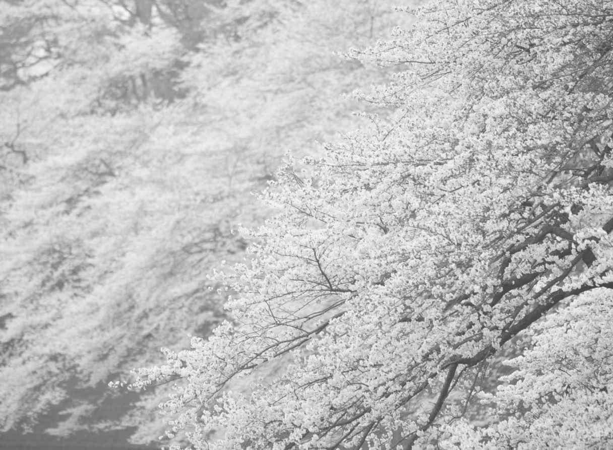

| どん底からでも人生は逆転できる。 | |
| 谷口 愛 | |
| (2015) | |
どん底からでも人生は逆転できる。
谷口 愛
まえがき
人間は「感情の動物」である、という言葉をよく耳にします。喜び、怒り、哀しみ、楽しみ......恨み、妬み、嫉みも、こころの奥底に潜む心情のひとつ。こうした感情の高ぶりは、前に進むための原動力にもなりますが、時としてブレーキとなってしまうこともあります。
私はかつて、他に何も選択肢のない「どん底」を味わいました。絶望という二文字しか脳裏に浮かばないような、底の底です。
芥川龍之介の『蜘蛛の糸』の主人公・カンダタが細くはかない蜘蛛の糸にしがみついたように、私もほんのわずかなチャンスをたぐり寄せ、しがみついて、わき目もふらず「どん底」から這い上がりました。その道行では、他人に対して怒りを覚えたり、恨んだり......決して平穏な日々ではなく、それどころか感情が溢れに溢れました。それでも、前に進むことは止めませんでした。なぜなら、幸せは与えられるものではなく、自分自身で摑み取るものだ、と思ったからです。
幸い、助けてくださる方々に恵まれ、私は「どん底」からの逆転を果たすことができました。
つらい状況にあっても立ち止まらず、前に進み続けていれば、やがて「何か」あるいは「誰か」との、出会いを呼び込むことに繋がります。願うだけではなく、何度上手くいかなくても必ず実現するという気持ちで動き続けていれば、天は自らを助くる者を、本当に助けてくださるものです。私はそれを実感しました。深い闇、濃い霧を吹き飛ばし、行く手を明るく照らすことができるのは誰あろう、自分自身だと気づいた瞬間が「どん底」からの逆転の始まりです。
私の経験が今、この瞬間、どうにもならない状況に追い込まれている誰かにとって、絶望を希望に変えるヒント、もがく根気、あるいはあがく勇気の種になるとしたら、こんな嬉しいことはありません。まずは、顔を上げることから始めてみましょう。
どん底からでも人生は逆転できる。──目 次
自分を幸せにできるのは自分だけ
突然の差し押さえ！ 家族の危機。
自分にできることを、やり抜く心がまえを持つ
無心で借金返済だけ目指したホステス時代
思い悩んだら「目的」を思い出せ
学ぶことで広がる可能性
急がば回れ！ 近道は「学ぶ」こと
チャンスは与えられるものではない
心から求めよ！ されば得られん。
打開する「心の強さ」を身につける
チャンスがなければ、自分で作れ！
持たざる者の挽回の流儀
誰にでもあるもの、それは「時間」
人間の価値は「今」決まるものではない
Prologue
自分を幸せにできるのは自分だけ
2015年2月、私はコーディネーターとして最後となる仕事を終え、ドバイを発ちました。
2009年に会社を興して以来、ドバイで事業展開を図ろうとする日本の企業や団体と現地をつなぐ仕事を、地道に一心に続けて、気がつけば7年が経っていました。
政府の役職や企業のトップの殆どを王族が占めるアラブ諸国では、通常のビジネスの手法は通りません。王族につながるルートを持たない限り、商談を行うどころか、相手に会うことさえ叶わないことが少なくないのです。
アメリカの大学に留学していたとき、友人の中にドバイの名士の子息がいて、彼から「一緒にビジネスをやらないか」と声をかけられたのが、この仕事を始めたきっかけです。
その頃のドバイは、今のように世界中の注目を集める場所ではなく、日本でも興味を持つ人は殆どいなかったのではないかと思います。私自身、ドバイどころか中東という土地そのものが縁もゆかりもないところでした。アメリカの大学を卒業したら、日本の企業に就職して、専攻した経済の知識が活かせるようなマーケティングや企画の仕事をしよう。それが卒業前に私が漠然と考えていた将来の青写真でした。ですから最初は戸惑ったことも事実です。
よく「先見の明がありましたね」とか、「なぜドバイ相手にビジネスをやろうと考えたのですか」などと聞かれるのですが、決して自分から進んで狙いを定めたわけではなく、本当に人の縁に導かれての運命と言うほかないのです。私にとっても青天の霹靂でした。
けれども、人生の転機というのは、往々にしてこんなふうにやってくるものなのかもしれません。自分の思い描いている道とはまったく異なる方向からチャンスが転がり込んでくる。私の場合も、血の滲むような努力をしてアメリカの大学を卒業したものの、当時38歳という年齢がネックになって、望んでいた道は片端から閉ざされていきました。そうしたときに、この話が持ち上がったのです。
このチャンスに賭けてみようと思いました。それが、ずっと私の生き方だったからです。やらないうちから恐れたり、あきらめたりしない。まずはトライしてみる。新しい世界への扉は開けてみる。
もちろん、だからといって最初からうまくいったわけではなく、宗教、文化、風習、気候、すべてが日本とはあまりにもかけ離れた土地で、しかも女性の身で独自のルートを築くには、失敗や苦い経験や、不快な思いをしたことも数えきれないくらいありました。
でも、「やるしかない」そう思って、今日まで進んできたのでした。その結果、徐々に信頼と実績を積み重ねることができ、近年では、民間企業だけでなく、政府機関からも依頼、照会をいただくまでになりました。
そうです。振り返ってみれば、私の人生はいつも、来た波がいい波だろうが悪い波だろうが、とにかく乗るしかない、どんな荒波にも果敢に向かっていくしかない、後戻りの許されないものでした。
父が事業に失敗、失踪したことで、私は15歳で社会に出ることを余儀なくされました。両親が作った4,000万円余りの借金を背負いながら、母と妹と私、3人が食べていくための生活費を、まだ15歳の私が、水商売の世界に身を投じて稼いでいかなくてはならなくなったのです。
「人生はなんて不公平なんだろう」と、何度、その運命を恨んだり、人と比べては自分の身の上をひがんだりしたことかわかりません。隣の友達が、ごく当たり前に手にしているものを、私は望んでも望んでも持てないのです。
けれども、
私はあきらめませんでした。
挫けている暇もなかった、と言うほうが正しいかもしれません。私が何とかしなければ、家族は生活できなくなる。とりわけ何の罪もない妹が、可哀想な人生を送ることになる。妹にまで、私と同じような惨めな思いをさせたくない。そう思うと、石にかじりついてでも、上を見て這い上がっていくしかなかったのです。
いつか、いつか、必ず私自身の夢を取り戻して、自分の人生を生きていく！ 時間はかかるかもしれないけれども、人の何倍かかっても、私はあきらめない。このままでは終わらない。一歩も動けなくなりそうになるたび、心の中でそう叫んで、何とか前に進んできました。
私の夢──。
それは、途中であきらめた勉学を、いつの日か再開することでした。とにかく学びたかった。
そう言うと、当たり前に学校に毎日行けた方たちには、ピンと来ないかもしれません。それどころか、どうやったら授業や塾をさぼれるかということに躍起になっていた......という方もたくさんいるでしょう。私から見れば、なんと贅沢な、もったいないことだろうという気がしてなりません。学びほど、後々自分の可能性を広げてくれるものはないからです。水商売で親が背負った借金を返していく生活を送りながらも、私が挫けずに済んだのは、いつか勉強できる日が来るに違いないという、根拠のまるでない希望的観測を必死で握りしめていたからです。なぜなら、
人は生まれ落ちる場所や両親や環境は、何ひとつ選べません。
けれども、もしも
唯一自分の境遇を変えることができるものがあるとすれば、それは「教育」
だと思ったからです。
私には、養ったり、後ろ盾になってくれるような親はなく、助けてくれる人も周りにはいませんでした。それどころか10代の頃から頼られる一方で、何もかも、一から自分の手で摑み取っていくしかなかったのです。そのような状況の中、世の中でさまざまなものを生まれながらに持って暮らしている人たちと互角に渡り合うには、私には「勉学をする」道しか残されていませんでした。
人生は不公平です。
私も子どもの頃は、「どうしてこんな親の下に生まれてしまったのだろう」と、そのことばかりを嘆いていました。
でも、ひがんだり、自分を憐れんでばかりいても、何も事態は変わりません。不公平が悔しいならば、人の倍、回り道をしても、苦労をしても、動くしかないのです。
幸い、
時間だけは万人に平等に与えられています。
もちろん、それぞれ与えられた天寿がありますから、同じ長さというわけにはいきません。けれども、自分が悩んでじっとしている時間も、恵まれている人がショッピングをしている時間も、流れる速さは同じです。だとしたら、その時間を味方につけて、フルに活かすようにすればいい。じっとしていないで、何かを求めて動けばいいのです。
動いていたら、思わぬヒントを見つけたり、じっとしているときには出会えなかった人にも出会えたりします。そして、自分でも考えていなかったような、新たな扉がまた開かれていくのです。
そうです。そこに
強い意志があるならば、時間さえかければ、目的地に到達することは、いくらでも可能
なのです。
私の人生は、まさにこうした試練とそれを乗り越えることの連続でした。そして、人よりも随分時間がかかったし、苦労もたくさん重ねましたが、一つひとつ夢が叶ってきたこともまた、事実なのです。
そして今、また私は次なる夢へと進んでいこうとしています。それは、自分のオリジナル商品をメーカーとして売り出す事業を展開するということです。
ドバイで皆さんの懸け橋となる仕事は、それはそれで非常にやりがいのあるものでした。けれども、私には、いつか実現したいと願って大事にしてきたさらなる夢がありました。それは、自分が死んだ後もずっと残っていくような形あるものを、世の中に送り出していきたいということ。
今年に入って、それがようやく実現の運びとなり、今、長年温めてきた化粧品の製造販売の事業を、また私なりの独自の方法で始めようとしています。次はどんな出会いが待っているのか、今、私の胸はドキドキときめいているのです。
私はまだ発展の途上です。これから挑戦したいこともまだまだたくさんありますし、ましてや自分が「成功者」などとは、まったく思っていません。
人はみな、それぞれの重荷を抱えて人生を歩んでいくもの
です。
私以上に大変な思いをされている方は、数えきれないくらいいらっしゃることと思います。ですから、この本では苦労話をしようとか、高みから「成功法」を語るなどということは、これっぽっちも考えていません。
ただ、もしも、あの日の私のように「人生ってなんて不公平なんだろう」と嘆き、恨み、ひがみ、どこへ向かって行ったらいいのかわからない若い人がいるならば、「あきらめなければ、時間さえかければ、回り道をしても、きっとこの先にいいことがあるよ」ということを伝えたいのです。
苦しい今がすべてではありません。
と同時に、
自分の幸せは、自分でつかむしかない。
「自分を幸せにできるのは自分だけなんだよ」ということを知っていただけたらと思うのです。
希望は常に力になります。私の場合は、教育を身につけることにそれを見出しました。徒手空拳で挑むしかありませんでしたが、学んだことを糧にすることによって、何のつてもなくとも何とか自分の人生を切り拓くことができました。勉学は、私に大きな自信と光を与えてくれたのです。
皆さんの希望は、果たしてどこにあるでしょうか。もしも、この本が、皆さんの希望に灯りを灯すような、そんなきっかけになれば、これほど嬉しいことはありません。
■1
ある日、両親がいなくなった
その日のことを、私は今でも忘れることはできません。おそらく、この先もずっとあの風景は心に焼き付いて消えることはないと思います。
それは、私が子どもでいられなくなった日。両親の庇護の下に、何の不安も憂いもなく、無邪気に毎日を送る、そんな、子どもとして当たり前の生活が、突然音を立てて崩れた日でもありました。
私は1967年、兵庫県神戸市に生まれました。その後、父の郷里である加古川市に移り、大人になるまでこの加古川市や高砂市で育ちました。父は、加古川市で代々庄屋を営んできた、比較的裕福な家の末息子。父親の遺産を贈与されて、それを元手に事業を営んでいました。芦屋出身の母とは、母が勤めていた神戸市内の百貨店で、客として出会ったのがなれ初めだと聞いています。
そして、この母も、たくさんいるきょうだいの末っ子で、今思えばそのせいもあったと思いますが、両親ともに大人になっても依存心がなかなか抜けない、本当の意味で自立できていないようなところがありました。お互い、ものごころつく頃には親は亡く、長兄や長姉を親代わりに育ったという点では、ともに愛情に飢えていたのかもしれません。誰かに頼りたいという思いを、常に持っている夫婦だったような気がします。
そういう性格ですから、父は自分で事業を興しても、なかなかうまく軌道に乗せられなかったのでしょう。気がつけば数千万円という借金を作ってしまい、どうにもならなくなっていました。
あの日がやってきたのは、我が家がそんな状態にあるときのことでした。当時、小学校3年生だった私は、大人の事情や我が家の経済状況など知る由もありません。しかし学校から帰宅すると、家にはひとつ違いの妹だけが残されているのです。父は仕事だと思いましたが、母はどこに行ったのだろう。おかしいとは思いましたが、「まあそのうち帰ってくるだろう」と、最初はあまり深く気に留めもせずにテレビをつけようとすると、電源が入りません。
「えっ？ ......テレビがつかない」
これってどういうこと？
電灯をつけてみようとしましたが、こちらもつきません。母は帰らぬまま、辺りはどんどん暮れてきます。不安とひもじさで妹は泣き始め、私にも事態の深刻さが徐々に飲み込めてきました。
結局、その晩は、両親ともに帰りませんでした。どこにいるのか、何をしているのかもわからないまま、9歳の私と8歳の妹の二人だけが、電気の止められた真っ暗闇の家に置き去りにされてしまったのです。もちろん食べるものも、お金もありません──。
想像していただけるでしょうか。10歳にも満たない幼い子どもが、突然親と連絡が取れないままに、灯りも食べ物もお金もない家に取り残されたときの、その恐怖と悲しさがどのようなものか。今の世の中でしたら、通報されてしまうような事態かもしれません。お父さんはどこ？ お母さんはどこ？ なんで二人とも何も言わずにどこかへ行ってしまったの？
後から知ることになるのですが、その日、多額の借金を作った父は失踪し、そのことにショックを受けた母は母で、行方をくらましてしまったのでした。母は芦屋のわりと裕福な家庭でお金の苦労をせずに育ったので、結婚してもごく当たり前に幸せな家庭が築けると信じていたのでしょう。そのことが叶わなくなったと知って、人生に失望したのか、精神的に大きなストレスを受け、追い詰められて、一時的に平常心を失って出ていってしまっていたのです。
普通の子どもだったらワンワン泣きわめいているところだと思います。けれども、私は、泣くよりも「何とかしなきゃ」という気持ちで一杯でした。そのために、子どもながら冷静に事態を見守れたのかもしれません。
もちろん泣きたかったのです。9歳の私も不安で一杯で思い切り泣きたかったのですが、妹が泣いている姿を見てしまうと、まず妹が可哀想で可哀想で、私がしっかりこの子を守ってやらなきゃ、という気持ちが先に立ちました。誰も守ってくれないのなら、私自身がこの子を安心させなきゃ、この子をお腹一杯にしてやらなきゃ。ただその一心だったので、いつ帰るのかわからない親を恋しく思いつつも、「大丈夫だよ」と妹を励まし、暗がりの台所に立ってごはんを作ってやりました。
結局、母だけは3日後に戻りましたが、父はそのまま家を出てしまいました。ごく普通だと思っていた家族の幸せは、あっという間に崩壊してしまったのです。
40年経った今でも、あのときのことを思うと、涙がこみ上げてきてしまいます。この歳になって初めて、当時の母の心細い気持ちも多少は理解できるようにはなりましたが、そのときは、夫が失踪したからといって、自分まで親の務めを放棄してしまう母の心情が到底理解できず、深い傷になりました。
その後も、人生、紆余曲折ありましたが、このときほどつらく悲しかったことは後にも先にもありません。それくらい、私にとっては、人生が一変するほどの大きいできごとでした。まさに、あの日が今の私の原点となっているのです。
その日を境に、考え方も生き方も180度変わりました。私は、学校の友達のように、親が敷いたレールの上を歩いていける身の上ではないのだ。私は親を頼ることはできない。私自身で、道を切り拓いていかなければならないのだ。そのことを、身を以て痛感したのでした。
■2
母の借金も膨らんで
そんなわけで父は借金を残したまま失踪してしまいましたので、残された母と妹と私で、これからの生活を立てていかなければなりません。
住んでいた一軒家の借家を出て、小さなアパートへ引っ越すと、母は生活の糧を得るために、喫茶店の経営を始めました。
けれども、それまで専業主婦でいた人間が、いきなり商売を始めてもうまくいくわけがありません。しかも、末っ子気質で世間を知らない母が切り盛りする店など思うように繁盛するわけもなく、見切りをつけた母は、次はこれならばどうだとばかりに、お好み焼き屋さんを開店しました。
しかしながら、これも同じ飲食で客商売。素人がいきなり店を始めても、お客さんが入ることはなく、また母は母で、父が背負ったものとは別の借金が膨らんでいくことになってしまったのです。
一方、失踪していた父ですが、しばらくして、母とは連絡を取るようになっていたようです。後から聞いたところでは、建設現場などを転々としていたようで、その寮に入って暮らしていたとのことでした。
そういえば、今でも覚えているのは、クリスマスや誕生日など、私たち子どもにとっての記念日の時のこと。父は学校帰りなどに、突然姿を現しました。
ケーキなど、ささやかなプレゼントを買っては、まだ幼い私たちに持たせてくれて、「お父さんは家に入ることはできないから、持って帰ってお母さんと食べなさい」と言い残して、また慌しくどこかへ去ってしまう。
父は父なりに、子どもにこのような苦労を負わせてしまったことを、心のどこかで申し訳なく思っていたのかもしれません。
父は母に生活費を渡してはいたようですが、母は自分が始めた商売の借金が雪だるま式に膨らんでいく有様で、そのお金の殆どは、その借金の埋め合わせに消えていったということを後から知りました。
ですから、私たち姉妹も、子どもながら常にお金の苦労が身についてしまって、周りの普通に暮らしている友達を本当に羨み、妬んだものです。
「どうして、うちは○○ちゃんちみたいじゃないんだろう」
「どうして、うちの親だけこんななんだろう」
思うことは常に、人と比べて自分がいかに惨めかということばかりでした。
お父さんとお母さんさえ、もっとしっかりしてくれていたら......。私だって、○○ちゃんのような服が着たいし、△△ちゃんが持っているのと同じような玩具も、バッグもほしい。せめて××ちゃんの持っているような新しい運動靴がほしい。どうして私ばっかり、こんな思いをしなくちゃいけないの？ 周りを妬む気持ち、親を恨む気持ちばかりが、まだ小さな私の中でどんどん膨らんでいき、未来への希望の芽も、一つひとつ潰されていくような気がしました。
それでも私が何とか持ちこたえていられたのは、妹を守るのは私しかいない、という姉としての本能的な責任感があったからかもしれません。
私の中には、常に、あの両親に捨てられた日の、暗闇の中で泣きじゃくる妹の姿がありました。彼女に二度とあんな思いはさせたくない。そう思うと、私だけはしっかりとこの事態を受けとめざるを得なかったのです。
小学4年生や5年生で毎日台所に立ち、妹のために食べるものを作っていた記憶があります。妹もその頃のことをときどき思い出しては、
「あのとき、お姉ちゃんが作ってくれた料理がおいしかったなあ」
などと言ってくれますが、
守るべきものの存在が、もしかしたら人を、ぎりぎりの崖っぷちから逆に守ってくれるのかもしれません。
大人になった今でも私はあの頃の妹のことを思い出すと胸が痛みますし、苦境に陥ったときは常に、あんな思いだけは絶対にさせないと、心が奮い立ってくるのです。
■3
父が戻るも、家は競売に
そうした状況がどれくらい続いたでしょうか、ほどなくして父が戻り、身を粉にして働いたお金を頭金に、無理してローンを組んで、新たに小さな家を建てました。私は中学生になっていたと思います。そこへ一家で引っ越し、ここからまたやり直せるのではないか、そんな希望が少し芽生えた気がしていました。
しかし、相変わらず借金はありましたし、家は常に荒れていました。母は父にずっと文句を言って、もの静かな父はそれを黙って聞いている。父は自分に学がないことや、一度失敗していることを引け目に感じているのでめったに怒りはしないのですが、あまりに鬱憤が溜まってくると卓袱台をひっくり返すようなこともありました。
そのような家庭の中でしだいに居場所を失った私は、中学2年生くらいからとうとうグレ始め、不良仲間とつるむようになっていきました。髪を金髪に染め、夜遊びに耽る。家にも学校にもどこにも属せない孤独を感じてしまうと、一緒にいられるのは不良仲間のほかにないのです。「朱に交われば赤くなる」というのは本当で、彼らの影響を受けていくうちに、気がつけば、14歳にしてスナックなどの水商売でアルバイトをするようにもなっていました。
そして、ついに、見ないふりをしてきたもっと厳しい現実が突きつけられる日がやってきたのです。
あれは私が中学3年生の頃のことです。ある日、大勢の男の人たちが、ズカズカと土足で我が家に上がり込んできて、ありとあらゆる家財道具を値踏みしては、片端から赤札を貼っていきました。いきなり有無も言わさず土足で踏み込むその様子は、15歳の私にとっては恐怖以外の何ものでもありませんでした。
父が苦労してやっと手に入れた家でしたが、月々のローン返済のお金を母が自分の商売で出た借金の返済に充てていたために、結局ローン返済が滞ってしまったのでした。その結果、家は競売にかけられ、家財道具という家財道具も差し押さえられてしまったというわけです。
それまでにも、電話がなりっぱなしの時期があったりしたので、子ども心にも「何かがうまくいっていないのだろうな」と感じることは多々ありました。おそらく借金の返済が遅れているのだろうということぐらいは容易に想像がつきましたが、それでも、これほど突然、差し押さえが行われるとは、思いもしなかったことでした。
普段と何ら変わりない状態でテレビを見ているところへ、大人の男の人たちが上がり込んできて、これはいくら、これはいくらとその価値を計りながら、ペタペタと赤い札を貼っていく。その乱暴な振る舞いに、恐ろしさと同時に、私は強い悔しさを覚えずにはいられませんでした。
差し押さえの様子をテレビドラマなどでご覧になったことがあるかもしれませんが、あの恐ろしさと屈辱感は、実際に体験した者にしかわからないはずです。やってくる人たちの人数といい、土足でズカズカと上がってくる傍若無人さといい、こちらの人権などまるで無視したような威圧的な態度は今思い出しても身の毛がよだちます。
なんで？ 私が何をしたっていうの？ どうして私たちから息つく間もなくすべてを奪わなければいけないの？
言いたいことは山ほどありましたが、そうなると、一気に事態は進み、嘆き悲しんでばかりもいられない現実が、次々に迫ってきました。というのも、間もなく裁判所から「家が競売にかけられているので、出頭するように」という召喚状が届いたのです。
本来なら一家の長である父や母が赴くべきなのでしょうが、二人ともうろたえてしまって「行けない」を繰り返すばかり。仕方がないので、司法書士の方に付き添っていただいて、中学3年生、15歳の私が家族を代表して行くことになりました。
今思うと、これも考えられない異常な状態です。自分たちが裁判所に行くのを拒んで、未成年の娘を代理でやる親がどこの世界にいるというのでしょう。それだけ信頼してくれていたということなのかもしれませんが、全責任を託された私は、ここでもまた「しっかりしなきゃ」と自らを鼓舞せざるを得ず、早すぎる自立を促されたのです。
そういう状況なら自己破産という手段もあったと思います。むしろ、そちらの選択をする人のほうが多いかもしれません。けれども、召喚されて裁判所に出向き、裁判長と対面したときに、気がつけば私ははっきりこう宣言していたのです。
「私は絶対に返します。どれだけ時間がかかってもこの借金は返します。絶対に自己破産はしません！」
脳裏には、ペタペタと我が物顔に赤札を貼っていった人たちの顔がありました。あの日の悔しさが、胸の奥底に、沸々と煮えたぎっていました。
絶対負けない！ 必ず耳を揃えて返してみせる！
15歳の娘の借金返済宣言を、裁判長がどう受け止められたのか、今となっては知る由もありませんが、結果的に自己破産という道を選ばなかったために、莫大な借金が未成年の私の肩にかかってくることになったのでした。
■4
私が大黒柱になる！
自宅差し押さえという事態にうろたえてしまった両親に代わって裁判所に出頭し、4,000万円余りの借金を返していくと威勢よく宣言した私でしたが、いかんせん未成年の中学生です。これから、どのようにして返済していくか、緊急に、具体的に考えなければなりませんでした。
こうなった以上、私が働くしかない。高校進学をあきらめるしかないことは、火を見るよりも明らかでした。心を決めた私は、中卒で働ける先を見つけることにしたのです。
中学に入ってからはグレてしまっていましたが、振り返ってみれば、もともと私は勉強が比較的好きな子どもでした。特に国語が大好きで、日本文学全集などに入っているような古典の名作は、小学生の頃には読破してしまっていました。
できれば高校に進学して勉強したい。その先の学校にも進んでみたい。それは、おぼろげな希望としてはありましたが、状況はとてもそのような我儘が許されるものではなかったのです。中学3年生の後半は、家の問題の処理に追われて、修学旅行に参加することはおろか、学校に通うことさえままならないような状況が続いていました。
父は以前のとおり、また家を離れて土木など建設現場の仕事に携わるようになりましたが、母と妹は、私が養わなければなりません。日々の生活費と、4,000万円の借金の返済。そのすべてが15歳の私の肩にのしかかってきたのです。
家がそんな状況であれば、しかもそれだけグレている思春期の子であれば、すべてを投げ打って家を出てしまおうと思っても、不思議ではありません。けれども、それをしてしまってはダメだ、ここで踏み留まらなければいけない、という思いが、一方で私の中に徐々に芽生えていました。
それは、周りの不良仲間のあまりにひどい現状に絶望感を覚え始めていたからです。中学1年生の頃からいちばん仲のよかったT子は、私とは比べ物にならない勢いであっと言う間に相当のレベルまで落ちていき、15歳にして、ついにソープランドで働くようになっていました。その年齢で「セックスが好き」と何食わぬ顔で言い放つ彼女を見たとき、心底ゾッとしてしまったのです。
男の子は男の子で、自分とつき合いのあった子たちはみんな少年院に送られているような状況でした。当時『積木くずし』という、娘の非行に悩み奮闘する親のドラマが一大ブームとなっていましたが、私の周りの現実は、あんなものではありませんでした。闇の世界、裏の世界へと落ちていく彼らを目の当たりにしては「ああなってはいけない」という恐ろしさが、「借金を返してまともな生活を送ろう」という方向に何とか私を向かわせたのでした。
とはいえ、事務職やアルバイトなどでは、とてもではないけれども追いつきません。ある程度の高額な給料が見込めるところで、なおかつ、自分の頑張り次第でいくらでも収入増が期待できる仕事。そう探していくと、まだ学歴もキャリアもない私には、水商売しかありませんでした。
やるしかない──。
どうしようかとか、やめようかとか、迷っている暇もほかの選択肢を考える暇も私にはなかったのです。とにかくこの苦境を打開するには、今、考え得る最適のものに飛びつくしかない。
迷ったり、立ち止まったり、逃げたりできるうちは、まだ本当に追い込まれていない
ということです。本当に追い詰められたとき、人間は、とにかく定められた方向に行動を起こすしかないのです。
私にとって、それは、効率よく高給が取れる水商売で、わき目もふらず働くこと。それ以外にありませんでした。
人にお金を借りたまま返さないという選択肢は、私にはあり得ないことでした。両親が背負ったものであっても、家族の一員として解決策を講じていかなければならないのです。自分はまだ若い。この先いくらだって働けるし、返していける時間もある。その可能性がある限り、絶対にあきらめない。
おろおろと途方にくれている両親は、もはや私にとって頼るべき存在ではなく、守り、背負わなければいけないものとなっていました。もともと長女気質ではありましたが、環境が私を一気に大人にしたのです。
母と妹を路頭に迷わせるようなことがあってはならない。とりわけ妹にだけは、私のような思いは味わわせずに、普通に高校に進学させてやりたい。その一心でした。父も母もあてにできない今となっては、私が一足早く大人になって一家を養っていくよりほか、道はありませんでした。
T子の先輩に、クラブのホステスとして成功している人がいて、彼女の紹介で姫路の繁華街にあるクラブに働き口を見つけ、何とか雇ってもらえることになりました。子どもの頃から大人びた顔立ちだったのですが、それが幸いして、年齢を疑われるようなことはありませんでした。
卒業式にも出席することなく、こうして、一家の大黒柱としての私の怒濤の人生が始まったのです。
■1
15歳でホステスに
15歳で両親が作った莫大な借金を背負ってしまった私は、義務教育の課程を修了するや否や、姫路市街の高級クラブにホステスとして勤めることになりました。
もともと年齢よりも大人びた顔立ちをしていたので、きらびやかなドレスを着て、お化粧をすれば、誰も15歳だと疑う人はありませんでした。
しかしながら、見た目は何とかそれなりに見えても、日々の仕事には、なかなか慣れることはできません。それはそうです。ついこの間まで中学生だったのですから、飲めないお酒の相手をすることだけで一杯いっぱいです。
そこへママから言われれば、お客様とアフター、つまり営業終了後の店外でのおつき合いや同伴出勤もしなくてはなりません。
少しでも早く借金を返すために、私は昼間の仕事も掛け持ちしていましたから、その生活は凄まじいものでした。夕方5時にお客様と食事を一緒にして同伴出勤する。営業が7時から11時半なのでその間お相手をして、その後はアフターに行く。アフターとなれば終わるのは明け方の3時、4時ですから、それから帰宅して、やっとお風呂に入って休みます。朝の10時頃からは化粧品の訪問セールスなどの仕事をしていたので、それに間に合うように起きて支度し、出かける。そんな毎日は、いくら若いといえども、体も心も疲れ切ってしまうに充分でした。
最初の頃はお酒も飲めませんから、無理に飲んであくる日吐き続けるということもたびたびです。タバコも1日に2箱吸うようになり、生活リズムは昼夜逆転。常にお酒臭く、明け方帰る頃にはお化粧も剥げきって、ドロドロです。特に私はアトピーだったので、肌が荒れて仕方ありません。それでもお化粧をしてお店に出なくてはいけなかったので、毎日ステロイドを飲んだり、注射してもらうなどして、乗り切っていました。
そうしたハードスケジュールによる体の疲労もこたえますが、もっとつらかったのは、自分の体が汚れていると感じられて仕方なかったことでした。
ホステスは、もちろん体を売ることはしませんが、そのすれすれのところでお客様に来ていただくわけです。つまり男の人たちは、その先を見て誘ってお金を落としてくれるので、そのあたりの駆け引きをどうしたらいいものか、若い私にとっては、それが一番の悩みのタネでした。いくら嫌だと思っても、ママから「アフターに行きなさい」と言われたら行くしかありません。お客様のご機嫌を損ねずに、誘いをかわすにはどう振る舞ったらよいのか──。ときには思い通りにいかずに、ホテルまでつき合うことになり、悔しい思いや、情けない思いを味わったこともありました。
時代は80年代。アイドル全盛の世の中で、街はキラキラしています。私と同世代の女の子たちは透明感にあふれて輝いている。それなのに私は17歳で50いくつの男性の相手をして、明け方ラブホテルから出てくるのです。そんなときは、自分の身が本当に薄汚く思えて惨めで居たたまれませんでした。
けれども私には「家族を養い、借金を返す」という明確な目標がありました。
何のために働いているのか、何のためにここへ来たのか。
その最初の目的をしっかり自分の胸に忘れずに留めておきさえすれば、迷いかけたときでもブレずに進める。そう信じて、自分を見失うことだけはしませんでした。
挫けたり、逃げている余裕
は私にはなかったのです。
しかしながら、その一方で、常に世をすねたような思いが胸の奥に燻っていたことも事実でした。一番私を卑屈にさせていたのが、中卒であるという学歴のなさと、やはり、自分の体が汚れている、自分は薄汚れているという拭いきれない引け目でした。一生懸命働けば働くほど、お金という結果となって返ってくるこの仕事は、稼いでいるという実感が持てましたし、実際に両親の借金を返しつつ家族を養えるだけの収入を得ることができていました。辞めるとか、逃げるとか、そんなことを思ったことはありませんが、このままの状態を続けて、果たして私はいつか学べる日が来るのだろうか、私をバカにした人たちを見返すことができるのだろうか、そういう漠然とした不安は常に心の中にありました。
もしも、周りに助けられなかったらダメになっていたかもしれません。けれども、やはり私は人のご縁に恵まれているのでしょう。どうしても「アフターに行け」と言われて、それが嫌で断わって、辞めたクラブもあります。いくつかのお店を転々とはしましたが、可愛がってくださる大物の女性にも出会い、着実に収入を得ることができていきました。
1年経つ頃には、1,000万円弱の年収を得るまでの「売れっ子」になっていた私は、背負った借金を地道に返しながら、家族を養っていたのです。
■2
母の裏切り
水商売を始めて、次第にお客さんがつくようになると、いろいろとプレゼントをいただくようになりました。私が勤めていたのは高級クラブですから、お客さんには資産家も多く、贈られるものの中には、1,000万円ぐらいはするであろう毛皮のコートや宝石などもありました。
そうしたいただきものを、私は自分の部屋に置いていたのですが、ある日のこと、それらがすべてなくなっていることに気づきました。
驚いて母に尋ねてみると、なんと、母自身が質屋に持っていったことがわかったのです。これには、さすがに愕然としてしまいました。聞くところによると、母は、その質入れしたお金で、借金をつくって困っている友達に、お金を貸してあげたとのこと。あまりのことに言葉を失い、ショックで全身から力が抜けていくようでした。飲めないお酒を浴びるように飲み、先輩ホステスたちに、足を蹴飛ばされたり、露骨に無視をされながらも必死でお客様をとり、アフター、同伴と、文字通り身も心もボロボロになりながら働いているのに。
一体、私は誰のためにこんな思いをして働いているのか。何もかも、親がつくった借金を返済するためじゃないの！ あなたたちを食べさせるためじゃないの！
それなのにどうして、他人にお金を貸してあげようなどということを考えつくの!?
情けなさと口惜しさで、体が震えるほど腹立たしく、次から次から言いたいことが溢れ出てくるようでした。
母は、こうした高価なプレゼントを娘がもらってくるという、その意味を果たして理解しているのだろうか、と考え込んでしまいました。
「この人、私の実の母親だよね？」
思わず、確かめたくなるくらい、母の親としての心情を量りかねました。
お金って恐ろしいものです。
母は、もともと優しい人でした。けれども、父の事業の失敗や、自分の商売の失敗などで散々苦労を味わううちに、精神的に追い詰められていたのでしょう。そうした言動をとる自分をおかしいとはあまり思わなくなっていたのです。
後に、私がある人とつき合ったときのことです。彼は私よりも20歳ほど年上で、最初はお客様として私を可愛がってくださっていました。聞けば、会社を経営していて、不動産も多く所有している人だと言います。離婚歴はあるけれども独身だということで、しだいにおつき合いを始めたのです。インテリで紳士で、とても素敵な方でしたが、それ以上詳しいことは何も知りませんでした。
けれどもつき合ううちに、不思議に思うことがあれこれ出てきたのです。
たとえば、どこかへ行こうとして彼が車で迎えに来てくれたときのことです。私たちが乗り込んだベンツの前にも後ろにも、同じようなベンツがずらっと並んで、私たちの車を挟んで長い列をなしているのです。
「え、これって......おかしいよね？ 絶対おかしいよね。この車の数って何なの？」
この人は一体何者なのかしら？ 聞きたくても、何となく聞いてはいけないような雰囲気に、私の中で疑問がだんだん大きく膨らんでいきました。
またあるとき、デパートに買い物に行くと、「このフロアのものを全部買いなさい」などと言われたこともありました。こちらはびっくりです。フロア全部って、本当に全部!? 一体どういうことなのだろう。よほどの資産家なのか、それとも──。
はっきりとは聞けないままに、そうした疑問が積み重なっていったある日、ずっと長袖を着ている彼が袖をまくるのを見る機会がありました。するとその腕には刺青が彫られていたのです。それを見て、初めて彼がやくざなのだとわかりました。
その人は、お客さんとしても私にちゃんとお金を積んでくれたのですが、私としてはそうされればされるほど、自分が身売りするようで嫌でした。
けれども、それを知った母はこう言い放ったのです。
「なんで断るの？ くれるというお金はもらってちょうだい」
思わず、このときも耳を疑って
「え、お母さん、それってどういう意味かわかる？」
と聞き返してしまいました。
「それって、自分の子どもをソープランドかどこかに売るのと同じ感覚だよね。お母さん、それでもいいの？ 私がそんな目に遭ってもいいの？」
すると母は一言、
「いい......」
このときのショックと悲しみを、私は今でも忘れることができません。実の母親に、しかも、自分が支えようと頑張っているときに、こんなことを言われてしまうなんて......。
もちろん、それくらい当時の母は切羽詰まっていたのでしょう。それが本来の母でないことは、その頃の母と同じような年齢になった今ならば、私も頭では理解できます。
けれども、お金と引き換えに自分の娘が差し出されてもいいのかと聞かれて「いい」と実の親が答えた、あのときの心の痛みは、今思い返しても涙が出そうになることがあるくらい、私にとっては深い傷になりました。
結局、その彼は、そんな反社会的組織の長でありながらも、私が夜の世界から身を引いて学校に通えるように後押しし、借金からも解放されるようにと、お金を出してくれました。そして「返せ」とも何とも言わないまま、私の前から姿を消し、以後、一切の連絡を絶ったのです。それはみごとな引き際でした。しかしながら、私の心には、母に投げつけられた言葉が、いつまでも深い傷となって残ったのです。
それならば、そんな母のために、どうして働けたのか、どうして親を捨てなかったのかと聞かれることもあります。もちろん、当時の私は親を恨みましたし、赦せないと思ったことも数えきれないほどあります。
けれども、結局、親と子はどんなに縁を切ろうと思っても、切れるものではありません。たとえ形や法律の上で切れたとしても、血のつながりまでは断てない。愛情だけでも、憎しみだけでも片づけることができない厄介な間柄なのです。後に大人になってから、周りから親との関係を断つことを勧められたこともなかったとは言えません。けれども、私にはそれはできませんでした。やはり親は親であって、自分にとって大切な存在なのです。私の場合は、自分が夢を叶えていけたことも、そう思えるようになった大きなきっかけになった気がします。自分がその後、
道を切り拓いて自信を一つひとつ身につけていくにつれて、親のことも少しずつ赦せるようになっていった
のです。
やはり、いろいろ確執があったとしても、母は世界でただ一人の私の母親なのです。父も然り。切ろうと思っても切れるものではない。大人になればなるほど、結局は親子なのだ、ということを痛感する場面も増えていきました。
それに、当時は、私がいなければ母は生きていけない、ということも心の底ではわかっていました。そして、私の働きが母と妹との暮らしを支えているという誇りが、私の頑張りの原動力にもなっていたのだと思うのです。
■3
このままでは終わらない
親の借金を返すために、高校進学をあきらめて水商売の世界に入った私でしたが、いつかこの仕事に区切りをつけたいという思いは、いつも心のどこかにありました。
中学校時代、友達にはお金持ちのお嬢様がたくさんいました。その子たちを横目に見ては、どうして私はほかの子と同じに、何の苦労や悩みもなく、毎日を送ることができないんだろう。そんなことばかりを思っていた気がします。世間は「お嬢様ブーム」で、ファッション誌には「全国縦断女子大生マップ」といたテーマで、きらびやかな女子大生が取り上げられていました。そこには親のお金で外車に乗り、シャネルのバッグを持つ学生がほほえんでいたのです。その自分とのあまりの境涯の差に打ちのめされたものでした。
また、中卒である自分の学歴も引け目を感じることのひとつで、ひがんでばかりいたのです。
お客さんとの会話の中で時事ネタになったりすると、
「そんなことも知らないの？」
と言われて、恥をかくことが間々ありました。そういうときには、ことさら自分の教養のなさが身に沁みて惨めでした。
そして、そのたびに「見返してやる！ 絶対負けない！」と思ったものです。アメリカ帰りの歯医者さんの娘のあの子も、いつもいい服を着ている社長の娘のあの子も、私をバカにしてきたすべての人を見返してやる！
私はこのままでは終わらない。
そのためには、まず一日も早く借金を完済して昼間の仕事に就かなければ。その気持ちが日増しに強くなりました。
そしてもうひとつ、私が夜の世界から絶対に足を洗おうと決意するに至った理由がありました。それは、中学時代につるんでいた仲間たちのその後の人生を知ったことです。ソープランドに自ら入ったかつての親友T子は、久しぶりに会ったとき、整形手術を受けたのか、顔が変わってしまっていて、その様子も何か薬でもやっているのではないかと思わせる異様なもの。あまりの衝撃に背筋が凍るようでした。
また、重い罪で奈良の少年院にまで行った男の子に、親に頼まれて面会に行ったこともありましたが、彼らの将来は、やくざの構成員になるか、クラブの黒服になるかぐらいです。中卒で落ちるところまで落ちると、こうした世界から抜け出すことができない。その現実を突きつけられて、ますます私はこの境遇を脱しなければと心に決めたのです。
水商売は風俗とは違いますが、やはり所詮、世間から見れば同じ夜の世界、水商売でしかないのです。社会的には低く見られてしまいます。周りの人たちを見返すには、まずはこの世界から身を引かなければいけない。そのことは自分が一番よくわかっていました。
まだ、そのときは、自分がその先にどうしたいかということは、見えていませんでしたが、持たざる者が、持てる者と
同じスタートラインに立てるための何か
を必死で探していたのだと思います。
我が家は、母が高卒、父が中卒の家庭でした。プラトンだったでしょうか、金の卵から生まれたら、その子どもは金の親の階層を受け継ぎ、それこそがよい社会を形成するということを言っていたような気がします。
戦後、民主主義の世の中になって、建て前としては、人はみな機会を均等に与えられていることになったため、そんな時代錯誤的なことはあまり言われなくなりました。しかし実際には、格差はあるのです。学歴の低い親はそれなりの地位にしかつけません。そうなると収入も低い。収入が低いと、子どもたちに満足な教育を受けさせてやれない。親は自分の二の舞は踏ませたくない、現状から抜け出させてやりたいと思っても、塾通いはおろか、毎月の給食代を持たせてやることもできない家庭が、今、この平成の時代にもあります。
社会学者の山田昌弘さんの著書『希望格差社会』には、現在の日本は、職業、家庭、教育のすべてが二極化して、将来に希望が持てる人と、絶望する人に分かれる、といったようなことが書かれていた気がします。親の学歴、年収はそのまま子どもに受け継がれていき、中卒の親の子はまた中卒であり、親の年収が子どもの教育を決めるとも。
これを読んだのは数年前のことですが、しかしながら30年前の私も、ここに書かれているような理不尽さ、やりきれなさは充分に感じていました。そして、自分は絶対そうはならない、私は親から引き継ぐ負の連鎖を断ち切ってみせる！ と強く心に誓ったのです。
とにかく借金を完済することを目標に必死で働きました。その結果、働き始めて3年後、18歳のときに、ついにすべて返し終え、水商売との縁を切ることができたのでした。
これから私は何を目指したいのか。「このままでは終わらない」とは思っているけれども、では、それは具体的に何をすることなのか。親からの負の連鎖を断ち切って、再び希望を持って歩いていくには、何が必要なのか。まだ、私の中にはそれらの問いに対する明確な答えは出ていませんでしたが、いつも胸の奥底には、途中で断たれてしまった学業への熱い思いがずっと燻り続けていることだけは感じていました。
■4
ついに昼の仕事へ
18歳でようやく家の借金を返済し終えた私は、夜の仕事に区切りをつけ、昼間の仕事に就くことにしました。知人の紹介で、宝石店で販売を担当する仕事を得たのです。
勤めて3年経っていましたし、自分で言うのも何ですが、当時の私は売れっ子ホステスでしたので、収入だけのことを考えれば、水商売で生きていくほうが楽なようにも思えました。事実、一旦辞めてからも「お店やってよ」などというお誘いもいろいろと受けたものです。
でも、私の中には「いやいや、水商売をやっていたら、絶対に『負けない』と誓った、私をバカにした相手を追い越せない」という強い気持ちがありました。このまま続けていたら、お金は稼げるかもしれないけれども、悔しい思いをさせられた友達に「あなたを追い越したよ」なんて絶対言えない。それは、どうしても嫌でした。
とにかく
時間がかかっても、回り道でもいいから、どこかでみんなと同じスタートラインに立つ。
それだけはどうしても譲れない、私のささやかな希望だったのです。
給料は歩合制でしたが、それまでも接客業をやってきましたから、この仕事は私にはうってつけ。自分でも面白いくらい営業成績を伸ばすことができました。
お客様には、学校の先生や銀行にお勤めの方など堅い仕事の方が多かったのですが、皆さん5年のローンを組んでも高価な品を買ってくださいます。当時は150万円のローンを組むと利息が40万円くらいかかったと思いますが、それでも買ってくださった。その結果、私は最初のボーナスで500万円をもらうことになったのです。
その後も順調に営業成績は伸びていき、20歳の頃には、ディベロッピング・マネージャーという役職を任される幹部に昇進しました。それまでのようにひとつの店舗だけでなく、いくつかの店舗を任され、その担当地域は関西地域のみならず、東京の店舗にまで及びました。
会社からすればトップセールスをあげている社員ですから、そうした出張のときには、新幹線はグリーン車で、ホテルも一流のところを取って、1ヵ月、2ヵ月泊まり込みで営業をさせてくれます。年収が1,500万を超えて確定申告が必要なときもありました。在籍期間中のトータルの売上は3～4億を超えていたのではないかと思います。頑張ったら頑張っただけ、きちんと結果になって返ってくる仕事は、非常にやりがいもありました。
そういえば、当時、お客様の一人であった元プロ野球の監督の方に、こんなことを言われたことがありました。
「君はきっと宝石を売っているわけじゃないんだよね。君は自分自身を売っているんだよね。僕も選手たちに言うんだよ。『お金はグラウンドに落ちているんだ。それを拾うのは君たちなんだよ』って」
つまり、このお客様が言ってくださったことは、「この宝石だから買おう」ということではなくて、
「私からだから」「私が勧めるのだから」
買おうと思う、ということなのかな、とそのときの私は解釈しました。それは私の大きな励みになる一言でした。チャンスをどう自分のものにするか、それは君の工夫しだいなんだよ。それを一つひとつ確実に拾っていくのは君の努力にかかっているんだ──数々の厳しい試合を闘い抜いてきた監督にそう言われたような気がして、見る人は見てくれている！
と胸が熱くなってくるのを感じました。
しかし、それだけ充実した仕事をしていても、私の心のどこかには、何かいつも満たされないものがありました。それはやはり、学歴に対するコンプレックスです。
この仕事に就くとき、実は学歴については正直に言えずに履歴書を偽って面接を受けていました。後にそれが上司の知るところとなったのですが、別段責められることもなく、「とにかく働いてみなさい」とチャンスをくださったのです。
実際、働いて3ヵ月間で私は全国のチェーン店の全販売員の中でトップ10に入る営業成績をあげ、会社も認めてくれるようになりました。
とはいえ周りの社員たちはみな有名大学出身の高学歴。引け目に感じないと言えば噓になりました。
いくら稼いだところで、お金は本当の意味で心を満たしてくれるものにはなり得なかった
のです。
みんなと同じスタートラインに立つには、大学を出なければいけない。大卒で初めてほかの人と同じスタートラインに立てるんだ。その思いは、宝石店で働き始めた18歳の頃から、どんどんどんどん強くなっていきました。
そのためには、まずは高校に行かなければ──。不完全燃焼のまま放置していた進学問題について、いよいよ具体的に考える時期に来ていました。
■5
死を意識して
～私は何がしたいの？
水商売でも宝石店でも、常にトップクラスのセールスを上げ仕事に邁進していた私でしたが、20歳のときに、それまで死にもの狂いで走り続けた疲れが出たのでしょうか、体調を崩してしまいました。
不調を感じて病院で検査を受けたところ、なんと子宮がんの疑いがあるとのこと。より詳しい検査のために数日間病院に入院を命じられました。
それまで、自分が病気になること、ましてや、がんのように深刻な病気にかかることがあるなど、想像したこともありませんでしたから、病名の可能性を医師から告げられたときは、目の前が真っ暗になるようなショックを受けました。それはすなわち、人生で初めて「死」というものを意識したときでもありました。
これまで必死で働いてきて、やっと何とか先が少しずつ見えてきたときに、もしかしたら私の人生は終わってしまうかもしれない。そう思うと、やりきれませんでした。やっとこれからだというのに！
同時に考えたのは、
もしも早晩、命の終わりが来てしまうとしたら、そのとき私は何を思うのだろうか。
何を思い残して死ぬのだろうか、ということでした。
そのときに、はっきりと私の頭にはひとつの答えが浮かび上がったのです。
「勉強したい！」
もしも生まれ変わることができるのだとしたら、普通の家庭の娘に生まれ、世間で言うところの普通の年齢で、高校、大学に行きたい！
それが私の唯一の後悔であり、言い換えれば、今の一番の望みでもあったのです。
今まで、何か自分の中で満たされずにいたものはこれだったのか。
病気を突きつけられて初めて、私は自分の中に眠る欲望としっかり対峙することができた
のでした。
こんなことになって初めて気づくなんて......と、込み上げてくるのは悔しさばかり。もしも、まだもう少し生きることが許されるのだとしたら、必ず、必ず勉強しよう。病室の白い壁を見つめながら、何度も思いました。
蛇の生殺しのような数日が過ぎ、担当医から病名を告げられる日がやってきました。検査結果は──
白!!
がんの疑いは晴れたのです。このときほど健康のありがたみ、人生を与えられていることのありがたみを痛感したことはありません。全身から力が一気に抜けていくとともに、これまで以上に、
ひとときも無駄にしてはならない
と固く心に誓いました。
一旦、死を意識した私に、もう迷いはありませんでした。
人生には限りがある。夢に向かって、とにかく具体的に行動に移していこう
と、その日から動き始めたのです。
とはいえ、仕事が忙しかったので、本格的に高校受験を考え始められたのは、6年先。さらに回り道をした私が最初にしたことは、家庭教師を見つけることでした。中学もろくろく通えなかった自分には、高校に入るだけの学力はありません。まずは中学の勉強から復習する必要があると思ったからです。
タウンページで家庭教師派遣センターを探して、今の自分の状況を説明するところからスタートです。つまり、もう20歳になっているけれども、今から高校に行きたい。でも中学の学力も足りていないので、そこから教えてくれるかどうか。さらに、仕事もしているので時間が不規則になりがちであるけれども、そうしたイレギュラーな派遣に応じてくれるかどうか。
その二つの要望を伝えたところ、先方から派遣されてきたのが、Y先生という男性でした。大学を一度卒業したものの、教師になりたくて再びその勉強をしている社会人で、私の5歳年上の当時25歳でした。
それからの私は、この先生の指導を受けながら、それこそ英語で言うと、Monday, Tuesdayなどの単語から勉強していきました。先生も一旦社会に出てから改めて教師を志したという人だけあって、それは熱心に根気よく、そんな私の勉強につき合ってくださったのです。
仕事をしながら、しかも中学1年生から学び直すわけですから、時間はかかるかもしれない。けれども、とにかく動き始めた。やっと念願だった勉強にたどりつけた。その喜びは、忙しい毎日を明るく彩り始めていました。
■6
突然、パニック障害に
がんの疑いが晴れて、ようやく勉強への道が開かれたと思っていた頃、再び思いもかけぬ病が私を襲いました。
それはいつもと同じように、大阪・梅田駅の構内を歩いていたときのことです。階段を降りるときに、突然、倒れてしまいそうな錯覚に襲われたのです。何が起こったのか咄嗟に理解できずに、その場にうずくまってしまったところ、急に息苦しくもなってきました。
「え、え、何が起こったんだろう？」
失神したり、救急車で運ばれたりするまでにはなりませんでしたが、それ以降は、たびたびそうしたわけのわからない「発作」に襲われるようになったのです。
当時マンションの6階に住んでいたのですが、発作が始まると、誰かに押さえていてもらわないと飛び降りてしまいそうな衝動に駆られたり、車を運転していても、赤信号に向かってアクセルを踏んでしまいそうな、そんな感覚に襲われることも一度や二度ではありませんでした。
電車も誰かと一緒なら乗れますが、一人では乗れません。過呼吸になったり、とにかく突然やってくる症状が、自分でも恐ろしくて仕方ありませんでした。
精神科をはじめ、ありとあらゆるところに診てもらいに行きましたが、病名がわからない。大抵のところで「神経症」「ノイローゼ」と言われて、自分では釈然としません。
悩んでいたとき、ある病状についての新聞記事が目に留まりました。そこに書かれていることが、どうも私の症状と近い気がするのです。解説者は、名古屋にいらっしゃるK先生という精神科医で、私と同じ症状について、それはノイローゼではなく、「パニック障害」というものであると説明されていました。記事を読むなり、もう藁をもつかむ思いですぐに名古屋まで行って、先生の診察を受けたところ、やはり、私の病気は「パニック障害」だと診断されました。
「パニック障害」？ なにそれ？
今でこそ、普通に聞かれる病名になりましたし、きちんと認知もされる病気になりましたが、当時はまだ一般的ではなく、社会的な理解も進んでいませんでした。そういう病気があるのかと私自身も驚いたのですが、そのK先生が処方してくださった薬は抗不安薬とあと2種類のみ。それまでたくさんの種類の薬を処方されては、今ひとつ効果を感じられずにいたのですが、これを飲んだら、症状がピタッと治まりました。本当にこのときは救われた気持ちになりました。
なぜこんな病気になってしまったのか──。いろいろなお医者さんの話を総合すると、結局のところ原因は、私がいつも根源的な不安を抱えていることなのだということでした。
半年くらい、隔週でカウンセリングに通っていた神戸大学のN先生という著名な精神科の先生には、
「あなたは、もう鍋底に具のひとかけらも残っていないのに、それでも、まだあるとこそぎ落としているようだ」
と指摘されました。つまり、まだまだ足りない、もっと一生懸命努力しないと生きていけない、との強迫観念に常に苛まれているというのです。
また、親の愛情を受けていないため、外見とは裏腹に脆弱なのだということも、よく言われました。確かに私には、人ともっと仲良くしたいのだけれども、ハリネズミのように、近くに寄ると相手を傷つけるのと同時に、自分も自身のハリで傷つくようなところがありました。それゆえに、行動の大胆さとは裏腹に臆病な脆い自分も抱えているのでした。
幼いときも、常に親の顔色を窺っていましたし、ホステスの仕事を始めたら始めたで、今度はお客様の顔色を窺う日々。掛け値なしの愛情と庇護の下で過ごしたことが殆どないため、人の厚意を素直に「ありがとう」と受け取ることができない。「これをもらったら、こうなるし......」などと、その先のことを考えて計算してしまう。そうしたことが原因となって、大人になっても常にどこか不安定なのだろうということでした。
「仕事をしたいので、早く治してほしい」とお願いする私に、パニック障害であると診断してくださったK先生は、「女性の幸せは結婚して子どもを産むことだから、そうしなさい」と仰いました。よりどころとなる何かが、私には必要であるということだったのかもしれません。
しかしながら、ちょうどその頃、かえってその不安定さに拍車をかけるようなできごとがありました。
実は宝石店の仕事を始めて少し経った頃、好きな人ができました。仕事を通じて知り合った宝石卸会社の人で、歳は一回り上でした。彼のほうから熱心にアプローチしてくれて、おつき合いが始まったのですが、あちらが埼玉で、私は神戸の遠距離恋愛。そのため、彼は結婚を強く望んでくれて、早々にプロポーズもしてくれました。しかしながら彼の両親が、私の中卒という学歴と、私の家柄がご自分たちの家よりも格下であることを理由に結婚に反対したのです。結局、彼から結婚話を断ってきて破談になりました。
あんなに熱心だったのに、そんな理由で簡単に別れを告げられるんだ。そのことが非常にショックで、私は拒食症に陥り一時は15㎏ほど痩せてしまったのです。
結局、いくら私が前向きに生きようとしても、両親のこと、私の過去のことがネックとなって、一生、私の幸せは阻まれるのだろうか。そう思うと、勉強をしようという気持ちの一方で、どうにもやりきれない無力感に苛まれました。
それもパニック障害を引き起こした一因であると思います。しかしながら、K先生の治療を受けたことで症状がひとまず落ち着いたのは、ありがたいことでした。
今ではもう殆ど症状が出ることはありませんが、ひどく疲れたりすると、出そうになることもあります。けれども、薬を飲むなどして自分でコントロールできるようになりましたし、随分楽になりました。
ここ10年ほどは、H先生という精神科医の方に、ごくたまに連絡しては「今日、行ってもいいですか？」と言って、話を聞いてもらって、自分の中の溜まったものを吐き出すようにしています。
H先生は、京都大学の文学部を出た後に、もう一度、神戸大学の医学部に入り直して精神科医になったという変わり種。ひとつの病院に勤めるのが嫌なので、アルバイトをして病院を渡り歩いているというあたりも、私にはホッとできる点のひとつです。
20年来、薬を手放せないことを悩む私に、
「いいじゃない。普通の精神科の薬って、買い物袋に一杯処方されるんだよ。あなたの場合は、今はもう抗不安薬の一種類だけでそれだけ仕事ができるのなら、一生飲み続けたら？」
と言ってくださって、救われた気持ちになりました。今はその薬も、いざというときのために一応いただいておく、という程度になりました。
病状が落ち着いてきたことの理由のひとつは、薬のお陰もありますが、何よりも、私が
自分の弱い部分も認めて正面から受け止められる
ようになり、無理に病気を克服しようと思わなくなったことだと思います。
完璧であろう、完璧に治そうという気持ちを捨てたことによって、自分を労れるようになったのかもしれません。
完治よりも一病息災。不完全なところと共存することで、自分を解放できるようになった、そんな気がしています。
■7
妹の結婚
15歳で借金を背負った私が、高校進学をあきらめて、水商売の世界でも頑張ってこられたのは、ひとつには「妹だけは幸せにしたい」という思いがあったからでした。
妹と私はひとつ違いですが、性格はまったく違っていて、私がせっかちでしっかり者なのに対して、妹は万事おっとりというタイプ。実際の年齢よりも、私にとっては「守ってやるべき存在」として、常に心の中にあったのです。
特に、あの小学生の日、両親ともに出ていってしまい、電気が止められて真っ暗な部屋の中で、ずっと泣きじゃくっていた彼女の姿を思うたびに、今でも胸がしめつけられるような気持ちになります。二度と彼女にあんな思いを味わわせない。どんな荒波からも私が守ってやる。あの日を境に、私は彼女の親になったのかもしれません。
ですから、彼女には何の憂いもなく、15歳で高校に進学し18歳で卒業するという、普通の青春を送らせてやりたかったのです。そのために一生懸命働いたと言っても過言ではありませんでした。高校を卒業する日には、私は保護者として式に出席し、その門出を祝いました。
その妹が、ある日、私の部屋に来て「お姉ちゃん、ちょっと話があるの」と言います。ちょうど私は宝石店での仕事が順調に軌道に乗っていた頃でした。何かと思って聞いてみると、「結婚したい人がいるんだけど」とのこと。彼女は22歳になっていました。
お相手は地方の名士。お家もそれなりに立派な方だったのですが、それだけに結婚式も、きちんとしたホテルで盛大に執り行いたいと言っているとのこと。妹が言いにくそうに私に切り出したのは、それがあったからでした。
妹の人生の一大事に、引け目を感じさせるようなことがあってはなりません。
「大丈夫。お姉ちゃんが全部用意してあげるから、お金のことは気にしないで、安心してお嫁に行きなさい」
そう言って、当時23歳の私は、結納の着物から支度金から挙式、披露宴の費用すべてを用意して、妹の新しいスタートを応援しました。
結婚式と披露宴には、うちの両親もそろって参列しましたが、当日、人目も憚らず、誰よりも大声でワンワン泣いたのは姉の私でした。披露宴会場の扉が開いて「新郎新婦の入場です」と言ったところから大泣きしていたので、周りからは「あれ、誰？」と奇異な目で見られたくらいです。
妹は、私にとって守るべき存在でもありましたが、同時に、今に至るまで、唯一心を開いて話せる相手でもあります。今は、私の会社のスタッフとして頼もしい相棒となってくれていますが、私が彼女を助けるだけでなく、彼女も私の愚痴や悩みを受けとめて、それを慰めてくれたり、和らげてくれたりするのです。
それぐらい、私にとってはかけがえのない存在なのですが、その妹がやっと幸せになれる、手を取り合うべき伴侶に出会えた、そう思うと、万感胸に迫り、後から後から涙がこぼれて止まらないのでした。
式も披露宴も滞りなく終わり、ホッとして家に帰ってみると、当たり前のことですが、妹の姿がありません。
「ああ、そうかぁ......。もうこの家には帰ってこないんだなぁ......」
そう思った途端に、今度はまたとてつもない寂しさに襲われて、また、涙が溢れてきてしまいました。心情としては、娘を嫁に出した親と同じだったのだと思います。
けれども、家の借金完済に続き、妹を嫁がせたということで、またひとつ肩の荷が軽くなったのも事実でした。やっと「責任」という自分の背負っていた荷物を降ろせたのだ......と思うと、初めて自分の将来が見えてくるような気がしたのです。
「ちゃんと高校に行こう。高校に通って、次は大学を目指してみよう」
続けている勉強も高校入学レベルに達するようになっていました。いよいよ自分の人生の扉を開くときが来たのです。
■1
高校進学
～恩師との出会い
ひとつ違いの妹が嫁いだのを見届けた後、1994年4月、私はいよいよ念願であった高校に26歳で入学しました。
昼間は仕事をしながらでしたので、通うのは、兵庫県立青雲高等学校という通信制の学校でした。単位制ですから、基本的には単位を取得すればよいのですが、月に数回は、スクーリングと言う面接授業を受けることが義務づけられていました。しかも、通信制とは言いながらも、県立長田高校という県下でも名だたる進学校と同じ敷地にあったためか、先生方も環境もきちんと整っていて、それが向学心に燃える私の心をさらに刺激してくれました。
通信制の場合、「高卒の資格があれば」という気持ちで入学する生徒が多い中、私は改めて「私はそうじゃない、必ずその先を目指そう」と心に決めていました。
「本気で大学に行くために、しっかり勉強しよう」
という目標をしっかり胸に刻んだのでした。
私は、通信制の授業内容をレベルが高いとは感じませんでした。ただ、熱心な先生方が教科書以外のことも教えてくださる、たとえば本のことや社会についての解説などが、私の視野をどんどん広めてくれて、胸がワクワクしました。
その中に、数学の楠先生という方がいらっしゃいました。非常に熱心に、骨身を惜しまず私たち生徒の指導に当たってくださった先生で、私はこの先生に出会えたからこそ、本気で大学を目指そうという気持ちが固まったのでした。
知ることの本当の面白さと、それによって心がどれだけ満たされるのか
学ぶときめきを、私は先生から教わりました。
20歳の頃からパニック障害を抱えて、常に心の奥底では不安を抱えていた私は、その少し前の一時期、新興宗教の勧誘を受けて、誰かに頼りたい一心で入会しかけたことがありました。それほど不安で心細くて仕方なかったのです。けれどもそれで心が安寧を得られることはなく、常に孤独と虚しさを感じていました。ところが、先生に出会ってからは、人は、ものごとを知って教養を積んでいくことによって自分の心のひきだしを増やせること、そして、
心のひきだしを持つことによって自分を支えていける
のだということを教えていただき、少しずつ、しっかり一人歩きできるようになったのです。
奥様にもかわいがっていただいて、私はよく先生のお宅に遊びに行くようにもなりました。
先生には3人息子さんがいらっしゃいましたが、全員が京都大学を卒業され、二人はお医者さんに、一人は理系の研究所の研究員になっておられるという優秀なご家庭でした。きっと、お子さんたちにも「学ぶ喜び」を伝えられた結果なのだろうなぁと、先生のお話を聞くたびに思ったものです。
残念なことに、先生は、私が通学している期間中に、大腸がんになり、やがて肝臓にも転移。けれども抗がん剤を打ちながら教壇に立ち、勉強がいかに大切かということを命がけで教えてくださいました。そして、わからないところがあれば、学校以外の場でも時間を割いて教えてくださったのです。
最後はホスピスに入られましたが、私はそちらにも頻繁にお顔を見に伺いました。いよいよ危篤のときにも、奥様が「愛さん、来る？」と声をかけてくださったので病室まで伺うと、先生はすでに意識が混濁した状態でした。しかし、奥様に呼ばれて枕元まで近づくと、先生はそのような中でも私に
「人間は一生勉強するものだよ。だから、たくさん本を読みなさい」
と言ってくださったのです。結局、それが先生の私への遺言になりました。
そう言えば、亡くなる少し前には、こんなことも言われました。
「今思っていることがすべてだと思ってはいけないよ。自分が成長していって環境が変わると、それとともに、考え方も、ものの見方も変わるから。今のことだけで判断して、絶対こうだという考え方はしてはいけない」
先生は、人生は「一生勉強」であって、今日よりも明日、明日よりも明後日、どんどん思索を深めて、視野を広げて、自分を磨いていくものなのだよ、そんなことを伝えてくださろうとしたのかなと、この歳になってみると、遺された言葉がより一層沁みてきます。
人間は一生勉強──。
この言葉は、人より10年も遅れて高校に入った私にとって、それから先の人生もずっと強い支えとなりました。
私は仕事をしながらの高校生活だったので、面接授業を取ることが難しく、先生は、科目によっては大検（大学入学資格検定 ※現在の高等学校卒業程度認定試験）を取ることを勧めてくださいました。先生のこの遺言を受けて、是が非でも大学に進まなければという思いを改めて強くしたのでした。
■2
結婚
宝石店で仕事をしながら、一方では通信制の高校に通う。相変わらず目まぐるしい日々を送っていた、27歳のときでした。
友人に「合コンの人数が足りないので来てほしい」と言われました。何でも某航空会社の女性チームと、某製造業の男性チームの合コンだそうで、私は完全に数合わせ要員。しかし、まあこれも浮世の義理です。それほど気乗りしないまま参加することになったのです。しかし、その中に、とても感じのいい、話の合う人がいました。聞いてみると、向こうも「人数合わせ」で呼ばれて参加したのだとのこと。私の3歳年上で、T大学を卒業後、その会社で研究員をしている人だということでした。
思わぬ出会いで意気投合した私たちは、つき合い始め、それから1ヵ月で同棲を始め、4ヵ月後には結婚することになったのです。自分でもあまりの急展開に驚くばかりでした。
彼のご両親は、お父さんがT大卒で、お母さんも有名私立大卒。私としては、気後れしてしまうような学歴です。彼自身も非常に頭の良い人で、しかも仕事一筋。それまで女性ともちゃんとつき合ったことのない、すぐに顔を赤らめるような純粋で真面目な人でした。
私も20代の半ばを過ぎて、自分の結婚を考えないこともありませんでしたが、そのときに頭に浮かぶ理想のタイプは、まず学歴が高い人、ということでした。これは私自身のコンプレックスと関係があるのかもしれませんが、私の視野を広げて導いてくれるような人に憧れていたのだと思います。彼はまさにそういう人でした。
また、ちょうどその頃の私は、妹をやっと結婚させ、自分も高校生にもなることができて一息ついたことで、心身ともに疲れ切って、誰かに頼りたいという気持ちもあったのです。
自分一人で頑張らなくてもいい、支えとなるようなパートナーがいてくれたら、これから未来に向けてどんなにいいだろう。そんなことも胸を過りました。
ただ、そういう彼であればあるほど、私は正直に自分の過去や背景を話して、きちんと理解してもらってからおつき合いしなければ......という気持ちは最初からありました。ですから、自分は中学しか出ていなくて今高校に通っていること、その前は家族の借金を背負って、それを返すために水商売をやっていたこと、そのことを正直に話した上で、
「あなたのご両親が聞いたら、何て言われるかわからない」
と、一番気がかりなことも打ち明けたのです。
すると彼は、
「いや、僕はそんなことは気にしないから」
と一言。非難めいたことを言うどころか、
「よく頑張ったね」
と言ってくれたのです。
世間体や常識に捉われない彼に、そのときの私がどれほど救われたかわかりません。
そんなわけで結婚話はトントン拍子に進み、海外に行ったことのなかった私の希望を容れてもらって、サンフランシスコで挙式することになったのです。
結婚式場の予約や手配もすべて彼がしてくれましたし、新婚旅行、新居の家財道具一切、サンフランシスコまでの私の両親の旅費もすべて彼が負担してくれました。遊ばない人なので、コツコツ地道に30歳まで貯めていたお金を、惜しげなく差し出して、何とか私の望みを叶えようとしてくれたのでした。
18歳で宝石店の仕事に就けたのが私の第一の転機だとしたら、彼との結婚は間違いなく第二の転機でした。何よりもともに歩んで支えてくれる人ができたということは、常に愛情に飢えていた私には、非常に大きな転換点になったのです。
しかも彼は、結婚後も、私の夢、望みを支援してくれこそすれ、反対したり遮ったりということは一切しないでいてくれました。彼との出会いによって、私は次のステップへ進もうという勇気が湧いてきたのです。
結婚後も1～2年は、高校の勉強をしながら宝石の仕事を続けていましたが、営業力を買われてマネージャーとして日本各地を行ったり来たりしながら働く日々に疲れ切っていました。勉強を続けていくことを応援してくれる伴侶を得たことで、学業に集中したいという思いも一層強くなり、いよいよ大学受験に向けて真剣に取り組むことにしました。いつも温かく励ましてくださった楠先生との約束でもある大学進学が夢ではないところまで来ていました。

■3
大検にトライ
～大学受験へ
高校で学ぶうちに、私には、医師になりたいという夢が芽生えてきました。可愛がってくださった楠先生が数学の先生だったことや、先生のご病気を間近で見たことなども関係していたかもしれません。そうは言っても、「ついこの間、中学の勉強の復習から始めた自分にはそんなの無理、無理」と考えるのが普通なのかもしれません。けれども、私はいつも何かを始めるとき、ついこう考えてしまうのです。
「あの人にできることが、なぜ私にできないの？」
不遜に聞こえるかもしれませんが、決して自信があって言っているのではなく、
他の人にもできることなら、自分だって時間をかけて努力すれば、いつかはできる
ことなのではないだろうか？ と素朴な疑問として、何かにつけてすぐに思ってしまうのです。単に負けず嫌いで、最初から「できない」とあきらめたり、投げ出したりすることが根っから嫌いだというだけかもしれません。
ですから、高校の課程でも、普通に全日制の課程に進んでいる人ですら避けがちな数Ⅲまで、私は取っていました。しかしながら、悲しいかな、通信制の勉強のレベルと全日制のそれとでは、雲泥の差があります。私が本気で医学部を目指すのであれば、それ相応の予備校に通う必要がありました。
当時、私は結婚したばかりでしたが、夫に「どうしても医者になりたい」と毎日言い続けていました。そして、学力の差を埋めるためにも「予備校にも行きたい」と。そうしたところ、夫は快く「行けばいいよ」と勧めてくれて、保護者のように費用もすべて出してくれたのでした。
予備校と一口に言っても、医歯薬専門学校は通常の予備校よりも授業料も高めです。それでも彼は「勉強することはいいことだ」という姿勢を少しも変えずに、どんなときも物心両面で助けてくれたのです。どれほどありがたかったかわかりません。
一方で、楠先生に勧められた大検（大学入学資格検定）も取るべく準備を進めていました。ようやく希望に燃えてワクワクしていた私は、しかし、またしてもこのことで、悔しく不愉快な思いをすることになってしまったのです。
大検──今で言う高等学校卒業程度認定試験──は、最近でこそ非常にポピュラーなものになって、受験者も大勢いますが、私が受けた頃は、まだあまり知られてはいませんでした。
今とはちがって、どちらかというと社会と協調できにくくて学校に行けない人が受けるものであるという社会認識があったように思います。
そんなことも時代背景としてはあったのでしょうが、ある日、受験に必要な書類をもらいに、兵庫県庁の教育委員会に出向いたときのことです。窓口の男性に、このような暴言を吐かれたのです。
「その歳まで何をしていたんだ、いい加減な」
私はこの歳からでも受験するということは、その前向きな姿勢を褒められこそすれ、批判されたり、馬鹿にされたりするものであるとは、まったく、露ほども思っていませんでした。それが、このような蔑まれ方をするとは......！
しかも相手は、教育委員会の人間です。向学心を持って真面目に学ぼうとしている人に対して、こうした言い方をすることが許されるはずがありません。このときばかりは、腹の底から憤りがこみあげてきて、わなわなと全身が震えるようでした。しかし、これが世間一般の見方なのかもしれません。後々、この私の「回り道」が、日本社会ではとことん異例で、歓迎されることではないのだと、嫌というほど思い知らされるのですが、国民の向学心を最も理解し、支援してしかるべき教育委員会の人がこうした発言をすることに、受験勉強の渦中にあった当時の私は、失望を通り越して、かえって闘争心が湧いてくるような気さえしてきました。
彼がどういう学校を出ているのかわからないけれども、私は絶対、彼以上の大学を出て、彼以上の教養を積んでみせる！ 県庁からの帰り道、私は改めて心に固く誓ったのでした。
■4
大学に入ってはみたものの
無事に大検も合格し、1年間、医歯薬専門の予備校にも通って、私は第一志望の大学を国立大学の医学部に定めました。そうです、センター試験にも挑んだのです。
向学心に燃える心の中には
「あの人にできることが、なぜ私にはできないの？」
という言葉のみ。
協力的な夫は、高校の授業の勉強も、受験勉強のときも、悪戦苦闘する私に、ときには家庭教師になって教えてくれました。理系である彼は、私が数学の問題と格闘する姿を見ては「数学はエレガントに解かなければいけないんだよ」と助言。私の証明問題の答案に「君のは力技だねぇ」と笑いながらも、根気よく熱心に指導してくれたものでした。また、2日間のセンター試験、両日とも会場まで車で送り迎えをしてくれるという、至れり尽くせりのバックアップ態勢。
私は既に宝石店の仕事は辞めていたので、自分の勉強に集中して、センター試験にトライすることができたのでした。
しかしながら、やはり、通信制高校と国立大学のレベルの差を埋めることは難しく、医学部への道は閉ざされてしまいました。
それでも併願した神戸市内の私立の女子大学に合格し、4月からは晴れて念願の大学生となることができたのです。その頃は、夫の会社の社宅に住んでいたのですが、ここならば家からもそう遠くはなく、主婦業と学業を両立させることが可能だろうと思ったことも、選んだ理由のひとつでした。1998年4月、私は30歳になっていました。
夫もとても喜んでくれて、高校の卒業式には、会社を休み、スーツを着て参列してくれました。通信制の高校の卒業式は、全日制に比べれば地味なものなのですが、彼はきちんと家族として祝ってくれたのです。そう言えば、在学中は体育祭も見に来てくれました。それこそ通信制の高校の体育祭など、本当に地味で盛り上がりにも欠けるものなのですが、彼は保護者として見に来てくれて、私の「学生生活」を心から支えようとしてくれたのでした。
そんな支えを受けて、第一志望ではないにしても、やっと憧れの大学での学問が叶う！ そう考えると、よくここまでやってきたなぁと我ながら感慨深いものがありました。
15歳で一家を背負うことを余儀なくされてから15年。さまざまな人との出会いに助けられたことは言うまでもありませんが、それでも、あれほどはるか先にあると思われた夢にやっとほんの指先だけでもかかったかと思うと、その感動もひとしおでした。生まれた境遇は自分の力で変えることはできないけれども、学歴は自分の努力しだいで変えられる。そして、これからも新たな学びを積み重ねていける。そのことに改めて喜びが込み上げてきました。どんな大学生活が待ち受けているのだろう？ 期待に胸を膨らませながら、新生活をスタートさせたところ──。
いざ学生生活が始まってみると、これが何ともつまらないのです。大学がお金持ちのお嬢さんたちが多く通う「お嬢さん学校」ということもあったのでしょうが、周りはファッションやメイクや恋愛のことに夢中の、派手で華やかな女子大生ばかり。連日、コンパ、コンパで、30歳を過ぎた私のところへも声がかかります。10歳以上年下の子たちと、そのような生活を続けることは、正直、厳しいものがありました。それは、私が想像していた大学生活とは天と地ほどもかけ離れていました。
あれほど歯を食いしばって働きながら、周りに馬鹿にされながらも頑張ってきたのは、こんな大学生活を送るためじゃない。もっと学問を追究して、幅広い知識を体得して、堂々と社会を渡り歩いていけるような教養を身につけるためだ。大学とは学ぶところではないの？ 一度湧いた疑問はどんどん深まるばかりで、私の心はすっかり冷めていってしまったのです。こんな大学なら、もう行きたくない。では、どうしたらいいのだろう？ 20歳で勉強を始めてから10年あまり、やっと憧れの大学生活に足を踏み入れたというのに、そこは私の「学びたい」という熱い欲求を満たしてくれるには至らなかったのです。私は行き詰まってしまいました。
■5
夫のアメリカ留学に伴い渡米
せっかく入った大学でしたが、「もう行きたくない」と私は夫に告げていました。あれほど必死になって求めていたものは、こんな大学生活ではない。これでは私の知的好奇心は何も満たされない。
また予備校に通って別の大学を目指すべきなのか。それともまったく違う道を行ったほうがいいのか──。これからの道を決めかねて悩み始めたときに、なんとまた突然に転機がやってきました。
夫に転勤の辞令が下りたのです。しかも海外。アメリカのフロリダ州だと言います。
「一緒に行こう」
夫にそう言われたときに、また新たな風が吹いたような気がしました。
そうだ、これはすべてを辞めて、また新しい生活を始める絶好のチャンスなんだ！ アメリカに行こう。アメリカに行って、もう一度、自分の憧れていた人生にトライしてみよう！ こんな形でまた次の扉が開かれるとは、思ってもみませんでしたが、私にとって、これは願ってもない幸運かもしれない。そう考えると、また胸が高鳴ってくるのでした。
夫の会社は現地に系列のパワープラント会社を作ることとなり、彼はそのために派遣されるとのことでした。そして、彼は私に、アメリカで大学に入ることを勧めてくれたのです。日本の国立大学にも行けなかった私が、今度はいきなりアメリカの大学だなんて、まるで雲をつかむような話に最初は戸惑いました。
けれども、またすぐにあの言葉が頭をかすめたのです。
「ほかの人にできることが、なぜ私にできないの？」
厄介な性分だと思います。この言葉が頭に浮かんできてしまっては、動き出さずにはいられないのです。
よし、やってみる。これも天から与えられたチャンスかもしれません。それならば全力を尽くして自分のものにしなくては。
胸の中にまた新たな希望の灯がともった瞬間でした。


■1
受けるならば名門を
2000年、私は夫の転勤に伴いアメリカはフロリダ州での生活を始めることとなりました。そして、夫の助言もあり、無謀にもアメリカの大学への入学を現実的に進めることにしたのです。神戸の女子大は、結局この機に2年で退学することになりました。
大学と一口に言っても、アメリカにはさまざまな種類、かつ膨大な数の大学があります。私の場合は自宅がフロリダ州だったので、自宅近くの大学にしようとは考えましたが、それでも州立、私立さまざまあり、またそのレベルもピンキリでした。
しかし、この大学を選ぶ段階でも、彼はまたこうアドバイスをくれたのです。
「どうせ進学するのならば、トップレベルを目指したほうがいい。コミュニティカレッジや州立大学など、アメリカにはたくさんあるけれども、そんなところには行くな。アメリカでレベルが高いのは圧倒的に私立、プライベートスクールだから、行くのならば、そちらに行きなさい」
確かにアイビーリーグなど、「名門」とされているところは皆、私立です。けれどもアメリカの私立は、その費用においても日本の平均授業料より高額でもあるのです。大体、平均して4年間で1,000万円は下りません。それでも、彼は「必ず私立大学に行きなさい」と言います。
アメリカは誰にでもチャンスのある自由な国だと思われていますが、一方で学歴偏重社会でもあります。どこの大学を出たか、ということが、ある意味、日本以上に重要視されるのです。誰にでも門戸は開かれているけれども、そこで勝ち抜いた者にしか栄光はないという、究極の実力社会と言えるかもしれません。ですから、夫の言うことは一理あって、大学選びがその後の人生を大きく左右することになりかねないのです。その意味では、ここで安易に拙速に手の届きそうなところを志望するよりも、背伸びしてでも上を目指すことが求められました。今、ここでの頑張り如何によって、卒業後の人生がまるで違うものになってしまうからです。
それならば、ということで、私はフロリダ州の名門ステッソン大学（Stetson University）を目指すことにしました。
ステッソン大学はジョージタウン大学と提携校。ジョージタウン大学と言えば、ビル・クリントン元大統領はじめ、多くの政治家を輩出している名門です。日本からも元国連難民高等弁務官の緒方貞子さんをはじめ、政治家などに卒業生、留学生が多いところでもありますが、ステッソン大学も、地元の資産家や、代議士、知事などの子弟が多く通っていました。
とは言うものの、もちろん入学はそんな簡単な話ではありません。なにしろ渡米した当時の私の英語力は、それこそ
"This is a pen."
程度のものだったのですから。
ステッソン大学に入学するには、外国人の英語能力を測るTOEFL®(Test of English as a Foreign Language)を受けなければなりません。入学を許される目安のスコアとしても、当時PBT（Paper-Based Test）で550点、CBT(Computer-Based Testing)で213点は取ることが必要でした。
一度でも留学をしようと考えたことがある方なら、このスコアがどれくらい高いものか、おわかりいただけることと思います。10年ほど前に中学1年の英語から学びなおした人間が、このスコアに到達しようと考えることがどれほど無謀なものか、きっとご理解いただけることでしょう。でも、やはりこれも「ほかの人にできて、なぜ私にできないの？」という私のいつもの負けん気が黙っておらず、いつの間にか、私はやる気満々になっていたのです。
そのほかにも、日本のセンター試験に当たるようなSAT（Scholastic Assessment Test＝大学進学適性試験）も受けなければいけませんでしたし、ライティングサンプル、つまり論文のようなものの提出も義務付けられていました。
果てしない道のりに思えましたが、ここまで来たら前に進むだけです。大学に入るために必要ならば、このチャンスをしっかり活かさなければいけないのです。ましてや私の場合は、夫にここまで物心ともにサポートしてもらっている状況です。ここであきらめたり、弱音を吐いたりすることは、私にはできませんでした。これだけ支えてもらって得たせっかくの環境なのだから、やっと手にしたこのチャンスを逃してはならない。ただその一心で、私は勉強に取りかかったのです。
■2
受験準備
～チャンスを嗅ぎ分けてものにする！
まずは、とにかく英語です。何とか英語を身につけなければいけないと思っていたところ、地域のコミュニティカレッジで、旧ユーゴスラビア避難民向けのクラスを開講しているところがありました。
当時、アメリカはミロシェヴィッチ独裁体制を倒すために、旧ユーゴスラビアを空爆し、それによって故郷を追われることとなった避難民の受け入れを行っていたのです。そして、彼らのための無料の英語クラスを開講していました。
本来ならば私は入れてもらえないクラスではありますが、さまざまな条件を考えると、ここで学ぶのがもっとも自分に合っていると思えて仕方ありません。大体、日本のようにすぐ近くに語学学校があるような状況ではありませんでしたし、渡米したばかりでどこに行っていいのかわかりませんでした。その点ここはコミュニティカレッジが提携する学校だったので、安心ということもあったのです。自分ひとりでためらっているよりも、とにかく当たってみよう。
そこで、私は早速そのひとつのクラスに押しかけていき、身振り手振りをまじえて、この英語クラスに通わせてほしいと訴えたのです。すると案の定、先生は
「君は日本人で避難民ではないだろう？ それにここはもう定員一杯で無理だ」
と言います。それでも、今ここで断られてしまったら、また英語の勉強を始めることが遅くなり、余計な時間と手間をとることになってしまいます。私にそんな余裕はありません。そして、まずは英語がしゃべれない、わからないことには、毎日の暮らしはおろか、フロリダ最古の私立大学を目指すなどということは望むべくもないのです。
ここはもう絶対引き下がれない。なんとしても、ここで「基本のき」から教えてもらわなくては、先に進めないのです。藁をもつかむ気持ちでした。
そこで、また一生懸命、身振り手振りで、
「定員一杯なら、私はパイプ椅子を持ってくるから、教室の隅でいいので座らせて学ばせてほしい」
と訴えました。
結局、あまりの食い下がりぶりにあちらが根負けしたのでしょう。何とかこのコミュニティカレッジの英語クラスに入れてもらうことができたのです。
このような話をすると、日本人の中には、「なんて厚かましいの？」と眉をひそめる向きも多いかもしれません。確かに私のとった行動は図々しいと言われても仕方のない行為かもしれませんでしたが、このときばかりは、どうしても学ぶチャンスを得たかったのです。
客観的に考えて、そのクラスに私一人が加わったとして、何か大きな支障があるとも思えませんでした。スペースがないというのであれば、自分で椅子を持ってくればよいだけのことだと考えたのです。
あきらめるのは簡単です。
けれども、自分の夢や希望を実現したいと心底願うならば、ときには、
とことん食い下がることも必要
なのではないでしょうか。もちろん、他の誰かに迷惑をかけないことが大前提ですが。
私に唯一何か特技があるとすれば、「これだ！」と思うチャンスが来たときに、必ず嗅ぎ分けて、逃さないことなのだと思います。
よく「チャンスの神様には前髪しかない」と言われますが、本当にそのとおり。「これだ！」と思うときに動かなければいけません。
「これだ！」をどう嗅ぎ分けるのか、それが本当に賭けてもよいチャンスなのか、はたまた危険な罠なのか、
それを見極める目と勘は自分で養うよりほかないのです。
そして、チャンスに手がかかったら、そのチャンスを自分のものにするか否かは、その後の努力次第。私はおそらく、そうしたことを一つひとつやってきただけ。このときも、与えられた
機会はまずつかむ、そして無駄にしない
と心に決めたのでした。
それでも、私のようなタイプは珍しかったのだと思います。そのクラスの先生には
「君は本当に日本人なのか？」
と聞かれました（笑）。おそらく先生の中の慎ましやかで、謙虚な日本人のイメージが、私によって覆されたのだと思います。
このクラスで基礎的なことを学びながら、それと並行して、毎月TOEFLを受け続け、少しずつスコアの上昇を計っていきました。受けたことのある方はご存じだと思いますが、TOEFLは、月に1度しか受けられず、しかもスコアが本当になかなか上がりません。私も1年間ずっと受け続けて、ようやく550点を取ったという感じです。
とにかく基礎になるのは語彙です。語彙が貧しければ、話すことも書くことも、ましてや聞くこともできない。ですから、これを増やすために一番努力しました。
毎日、ナショナルパブリックラジオを聞いて、あとはライティング。地道に書いて、聞いて、意味と発音を体に叩き込んでいく。気の遠くなるような地道な作業の繰り返しでしたが、語学の習得に近道はありません。ただコツコツと日々の勉強を続けていくだけでした。
書くにしても、話すにしても、聞き取るにしても、すべてのベースは語彙です。語彙がなければ、そのいずれもができません。聞き取る力がある、ないと言いますが、自分の語彙にないものが聞き取れるはずはないのです。
学ぶということは、何か能力が飛躍的に開花するということではなく、こうした地道な学習を日々積み重ねていくしかないのだと思います。それでも、やっと勉強するチャンスを与えられたと思えば、これくらいを苦しいと言ってはいけない。そんな思いだけでした。
そうするうちに大体1,000語マスターしたあたりから、徐々にラジオが何をしゃべっているのか、聞き取れるようになりました。
そしてライティングについては、これは仕方ないので家庭教師をつけて、1年間ずっと見てもらっていました。
なぜこの大学を志望するのか、入学したら何を学びたいのか、そうしたことを書いて提出するわけですが、これもただひたすら語彙を増やしながら、何度も挑戦していく。
また、それと並行してステッソン大学のアドミッション・オフィスもよく訪ねては、情報を仕入れるようにしていました。大学側も「この先生に相談するといいですよ」と言って、教授を紹介するなど協力的でした。慣れない異国の土地でしたが、そうやって1年間、一歩ずつ学びを重ねていった結果、ようやく34歳を目の前に、ステッソン大学への入学が許可されたのでした。ついに、今度こそ自分の望んでいた大学生活がスタートするのです！
大分回り道をしてしまいましたが、いよいよ本当に学びたかったことが学べる。これで漸く、先を行っていた人たちと同じスタートラインに立てる。そう思うと、喜びとともに心地よい緊張感で満たされ、武者震いするようでした。
■3
名門ステッソン大学に入学
──語学のハンディを乗り越えて
ステッソン大学では政治・経済を専攻しました。なぜ政治経済を？ と聞かれるのですが、やはり、幼いときから私なりに世の中の理不尽を味わい尽くしてきたという思いがあったからです。青臭いと言えば青臭いのですが、社会の仕組みを学んで、持たざる者がこれほどまでに辛酸をなめなくても済むような、そんな世の中を実現することに加わってみたいと思ったというのが、正直な気持ちでしょうか。
アメリカの大学は日本と違って、教授が一方的に喋って、学生はただそれを聞いている......というスタイルのものは殆どありません。ほぼすべてがディスカッション形式で、少人数。近頃は、マイケル・サンデル教授の講義をはじめ、欧米の大学の講義の様子が日本のテレビでも放映されるようになったので、皆さんにもイメージしていただけるのではないかと思います。
一学期に大体平均して4つくらいのクラスを取るのですが、そのいずれもが教授を中心に、全員でディスカッションしていくスタイル。講義の中では、「あなたはどう思うか？」ということを必ず突きつけられます。1回の授業のために3～4冊の本を読んでくるような宿題も出される。私の場合は政治・経済でしたから、古典であるマキャベリとかルソーなどに始まって、さまざまな課題図書を出され、そのすべてを読んでいかなければ、議論に参加できないのです。
その資料を読んだ上で議論して、教授が「エッセンスはこうなんだ」というような総論を解説する。それが終わると、学期末にはテストがあります。これも日本のような質問に対して答えを埋めていくような形ではなく、すべてBlue Bookと呼ばれる論述式のものです。さらに、4つクラスを取っていたら、それぞれに学期ごとに課される30ページほどの論文があります。つまり1学期に4つの論文を提出しなければいけないということです。私は経済を専攻していたこともあって、ただ文章を書くだけではなく、統計学のデータであるとか、グラフなども作成して添付する必要があります。
ネイティブでも最初はかなりハードルが高いと思うのですが、こちらにはそれに加えて語学のハンディキャップがあります。ネイティブの学生の何倍、何十倍も努力して初めて、やっとついていけるかどうか。最初のうちは、そのことで本当に苦労したものです。
講義の中で「あなたはどう思う？」と聞かれたときに、何も答えられないと、あちらでは「何も考えていない」ということになり、つまり頭が悪い、勉強ができない、という烙印を押されてしまいます。
"Let me see......"などと言って考えているふりをして、何とか言うことを組み立てようと思うのですが、言葉が出てこないのです。
本は読めるので、ちゃんと全部読んでいきます。なのでプラトンについてだってソクラテスについてだって、自分なりに考えていることはたくさんあるのです。言いたいことも山ほどある。だけれども、どう伝えてよいかわからないのです。政治・経済ですから、使う言葉も日常会話とは異なる、その領域の専門的な用語が多くなります。日頃使わない言葉をどう操ったらよいのか。日本語ならまくしたてるのに......という場面でも、悔しいほど言葉が出てきません。
いくらTOEFLが合格基準に達しているとは言っても、ネイティブの学生と白熱した議論を闘わせるほどの会話力は、まだ持ち合わせていなかったので、何も言えずに恥をかいたことは数えきれないほどあります。ただでさえ周りは18歳、19歳という若い子たちが多い中、私一人が34、35という年齢です。いくらアメリカがオープンな国柄だとしても、やはりジェネレーションギャップからくる居づらさはありました。ましてや私の通う大学は、親が弁護士だとか政治家だとかいう、良家の子女が多かったので、私はなかなか溶け込むことができませんでした。
アメリカの大学は、カフェテリアなど、ランチやディナーをとる施設が充実しています。至るところで、仲間同士が楽しく語り合いながら食事をする光景を目にするのですが、やはりこういう場でも、自然と同世代のグループができてしまうもので、外国人でしかも年齢差のある私は、最初のうち、いつも独りでした。常に、一緒に食事をできる相手を探しては、とても寂しかったことを覚えています。みなが楽しく笑い合っている場でひとりぽつんと食事をしていると、否が応でも孤独感が募ってきました。たまに声をかけてくれるのは、日本に興味のあるような、大抵、男子学生です。私は救われましたが、女子学生からは「年下の男を誘惑している」「男好き」と見られて、つらい思いをしたものです。
また、アメリカの大学では、学生同士が社交クラブを結成します。いわゆるファタニティ、ソラリティというものです。殆どの学生が、男性は男性、女性は女性、それぞれのグループに属し、試験が終わったとき、休みの前などには部室に集まりパーティを開きます。よく映画でも見られるシーンですが、キャンパス内には、学校から供給されるレンガ造りの一軒家が無数に点在していて、そこにクラブの部室があり、ダンスパーティなどが開かれるわけです。
しかしながら、やはりここでも私はどこの組織にも属することができずに、ひとりでした。やはりアメリカといえども、私のような学生は異色。同級生よりもかなり年が上であるということで、授業だけではなく、日々の生活の中でも、何かにつけて引け目や居心地の悪さを感じていたのです。
そういう環境に置かれているときに講義でうまく自分の意見が言えないと、なおのこと惨めな気持ちに陥ったものです。
あまりに情けなくて悲しくて、講義が終わった後、趣のある美しい木造の建物の廊下を、泣きべそをかきながら歩いたことも何度もありました。大学の近くにアパートを借りてそこから車で通っていたので、講義が終わると一旦帰って、また午後から来る、というようなことをよくしていましたが、ひとつ講義が終わると泣きながら家に帰る......ということも、最初のうちはたびたびありました。
少人数ですから先生の講義のテンポも速い。ワーッと一気にしゃべります。南部の先生ならば、まだ少しはゆっくりなのですが、ニューヨーク出身の先生などの場合はそのスピードたるやものすごい。
ボイスレコーダーに録音しながらノートも取って、帰宅後もう一度、その録音を聞きながら復習するわけですが、それでも聞き取るのが難しいのです。
聞けないし、しゃべれない。これではいくら志があっても前には進めない。何とか現状を打破して乗り切るために、私はチューターに助けを乞うことにしました。
チューターというのは、大学からお金をもらって、できのよくない学生の面倒を見る優秀な学生のこと。ステッソン大学はチュータリング制度を取っていたので、私も「言葉の問題があるので、助けてほしい」と願い出て、チューターを一人つけてもらうことにしたのでした。
具体的にどう助けてもらったかというと、ボイスレコーダーに録音したものを一緒に聞いてもらい、自分で取ったノートと照らし合わせて、どこが聞き取れなかったのかを拾ってもらう。その作業を毎回やってもらったのです。
おそらく1年は続けたでしょうか、結局、ちゃんと聞けるようになるまでに1年半、それを「これが言いたい」という自分の意見として言えるようになるまでさらに半年。
大体、トータルで2年はかかったと思います。一口に語学力と言っても、それくらいペーパー試験でのスコアと、実際にディベートできるぐらいまでになるレベルとでは、大きな差があるのです。
寂しさや居づらさはありながらも、それでも私の中の「学びたい！」という情熱の火は消えることはありませんでした。
こうした勉学の苦労は外国人学生としては誰もが通る道かもしれませんが、アメリカに来たときには本当に何もしゃべれず、"This is a pen."のレベルからスタートした私にとっては、より激烈な奮闘の日々の幕開けでした。

■4
"ハリケーン・愛"
～ベイリー教授との出会い
英語のハンディを乗り越えながら始まった大学生活は、もちろん専門の政治・経済のほうの勉強も、こなさなければならない課題が多く、息つく暇もありませんでした。
あちらの大学は、図書館も24時間開いています。つまり「勉強できなかった」という言い訳が成り立たない。私は経済も専攻していたので、日本の経済学部ではカリキュラムに組み込まれているところは殆どないと思いますが、微分積分などの数学も学びましたし、統計学も取って、たとえばマルサスの『人口論』など古典的なものから、統計解析のソフトウェア、SPSSを使ってグラフを作成したりすることまで、すべて一から学んでいきました。少なくとも、最初の2年間は、休暇としての週末はまったくありませんでした。
苦しいと言えば苦しい毎日でしたが、それでも私にとってはそうした苦労も含めてすべて楽しい、自分の糧になる日々でした。日本でも勉強は重ねてきましたが、記憶力を競ったり反復練習をしたり、というスタイルではなく自らの思索を深めて構築していく形の勉強は、その比ではないくらい面白いものでした。アメリカの大学に進んで、初めて、心から「勉強ってなんて楽しいものなのだろう！」と思えたのです。
そしてもうひとつ、アメリカの大学生活を生涯忘れられないものにしてくれたのが、運命の恩師、政治学科のベイリー教授の存在でした。
あちらの大学はクラスではなく、メンター式を取っています。メンターというのは、学生一人ひとりにつくアカデミック・アドバイザーで、私たち学生は、そのメンターとの対話によって助言を受けながら、自発的、自律的に学習を進めるのです。
そのメンターになってくださったのが、ベイリー教授でした。私のような学生は、大学では"non-traditional student"と呼ばれていました。これは"traditional student"に対する言葉で、後者が高校を卒業してすぐ18歳で大学に入った学生を指すのに対し、前者はそれ以外の、いわゆる「普通でない学生」の意。つまり、働きながら必要な科目だけ取ったり、年齢が通常よりも上の学生とでも言いましょうか。
つまり、これはある意味、アメリカがいかに格差社会か、ということの表れでもあると思うのですが、やはりアイビーリーグをはじめとする私立のレベルの高い大学になればなるほど、順当に18歳で入って、それなりの学力も親の財力もあるということが重んじられる、すなわち"traditional"であることが重要なことを意味しているのです。門戸が開かれているようで、やはり、そこには厳然とした区別が存在する、ということなのです。
ただ、チャンスはすべての人に与えられています。そして、そこで努力して高い学歴をつければつけるほど、その後の社会的地位が高くなり、人生の選択肢も増える。それは日本と大きく異なるところなのです。
話が少しそれましたが、ベイリー教授は、そうした私のような"non-traditional student"や留学生、黒人学生など、マイノリティをとても大事にしてくださる先生でした。
実は、ベイリー教授と出会ったのは大学入学前のことです。私が大学にいろいろと相談する中で紹介されたのが先生だったのです。親身になって力になってくださった先生は、その年の大統領選の民主党フロリダ州党大会に、アル・ゴア元副大統領の事務所スタッフとして私を参加させてくださいました。入学前から気遣ってくださり、それは入学後も続きました。
彼は、学内でたった一人の日本人で、しかも年齢もほかの学生と一回り以上違う私のことを、とにかく陰になり日向になり、支援してくださったのです。授業についていくのに必死でいっぱいいっぱいの私は、初めの頃はノートを取るのも一苦労でしたが、そんなとき先生は、私の代わりにノートを取ってくれる人をクラスで探したり、何かにつけて相談に乗ってくださったのでした。
実は、アメリカに住み始めて2年ほど経った頃、夫が今度はポーランドに転勤になったのです。ところが、まだ私は大学の途中で、漸く勉強が軌道に乗ってきたところです。そこで夫は、私を残して一人で行くことに決め、向こうから生活費も学費保険代もすべて仕送りしてくれることになったのです。全面的に私の勉強を支援してくれるその姿勢は本当にありがたいものでしたが、苦しい勉強に明け暮れる毎日、一人暮らしをしていると、気分が沈んでしまうこともありました。
ベイリー教授は、そういう事情もご存じだったので、私がちょっと授業の中でついていけないような場面があった日には、必ず電話をかけてきて、「どう？」と様子を尋ねてくださるのです。「今日はどうしてるの？ 一人で寂しくない？」など、優しくフォローしてもらえると、異国での孤独感も和らいでいくようでした。
そして、「先生、実はこうでね、こうでね」と、私が優しさに甘えていろいろと悩みを打ち明けると、「じゃあ研究室に来なさい」とか「この本を読みなさい」とアドバイスをくださいます。
勉強を助けてくれるチューターについても、「相性があるだろう」と気にかけてくださり、アルバイト感覚でやっている学生も多い中、本当に困っている人を助けてあげようという姿勢の学生を選んでつけてくださったりもしました。
その細やかな優しさに、在学中、どれほど助けられたかわかりません。在学中だけでなく、卒業して何年も経った今でも、ときどき連絡をくださっては「どう？」と様子を気にしてくださるのです。
そんなベイリー教授に、私はよく"ハリケーン・愛"と呼ばれたものです。理由は、「君が何か言い出すと、それが片付くまで引かないから」（笑）。急に上陸してすべてをなぎ倒して駆け抜けるハリケーンみたい、ということなのでしょうか。「君は本当に日本人か!?」と、彼にもよく言われました。日本人というと、やはり遠慮がちに3歩下がって......というイメージがあったようなのですが、私はそれをぶち壊したらしいのです。押しが強い、ということなのでしょうが、でも、先生には「そのバイタリティはいいことだ」と認めてもらってもいたようです。
ちょうど年齢が、父親と娘のような感じだったということもあって、子どもみたいな年頃の変わり種の留学生が、バーンとぶつかっていくので、それを可愛く思ってくださっていたのかもしれません。
彼とは卒業後もずっと交流があり、一時期は「養女にならないか」と言われたこともありました。アメリカで仕事を見つけて暮らしていけるようにという計らいだったのだと思いますが、当時はまだ実の父が健在でしたから、その父を置いて、先生と養子縁組することには私も抵抗があり、それはお断りさせていただきました。
けれども、最近でこそ行っていませんが、大学を離れてからもたびたびアメリカに先生を訪ねることはしていて、そのときは常に「アメリカに行く」のではなく、「アメリカに帰る」という感覚なのです。私はアメリカの大学だったからのびのびと学ぶことができ、ベイリー先生の温かな指導があったから何とか乗り切れて卒業できたのだと信じています。
彼と出会えたことは、私にとって一生の宝となりました。
■5
ゴア元副大統領の選挙スタッフ
～判事ピゴット女史の下でのインターン
今振り返ってみれば、私が何とか毎日の勉強を乗り越えて4年間大学に残れたのは、間違いなくベイリー先生との出会いがあったからでした。彼は、日々の授業のことだけでなく、私の人生を長い目で捉えて、今何が必要か、将来のために何を積み重ねていけばよいのか、そうしたことを、常に細やかに考えてくれていたのでした。
前述のとおり、2000年、アメリカ大統領選のときには、候補として立っていた民主党のアル・ゴア元副大統領のフロリダの党大会でスタッフとして入れるように紹介してくださいました。大統領選では、州ごとに党大会が行われますが、フロリダ州の大会のときに参加させていただいたのです。今後政治を学ぼうとしている学生として、現場でどういうことが行われているのかを見ることに大きな意味があるということだったのでしょう。まだ入学許可が下りる前でしたし、いきなり大統領選ですから私も驚きましたが、やはり、机上の学問だけでなく、現実の政治の舞台での動きを、一スタッフながら間近で体験できたことは、その後の私の人生においても、非常に役に立ちました。
先生はこのようにして、私と社会とをつなぐ鍵をいろいろと渡してくださいました。
中でも大きかったのは、3年生のときに地元フロリダ州の女性判事、ジュリアン・ピゴットさんの下でのインターンの口を紹介してくださったことです。フロリダ州は死刑のある州でもあり、ピゴット判事は、さまざまな殺人事件を扱っていました。そして、その個々の判例を通して、実に熱心に一インターンである私にも丁寧な指導をしてくださったのです。
中には、一家5人が惨殺されるという凄惨な事件もありました。部屋中が血しぶきで真っ赤に染まった現場でしたが、そうしたスプラッターな事件を起こした犯人に会いに、私は独房に行かされたりもしました。
アメリカでは逮捕されてからの拘留時間が48時間あるのですが、刑務所の中に裁判所があるので、「この人を保釈金いくらで保釈するのか」などについて裁判したりもします。どんな犯人が来るのかと思ったら、腰に鎖をつけられた小学生のような子が来たりもする。誰かをナイフで刺したとか、親も見放しているような子どもの犯罪もありました。そうした実にいろいろなケースがどう裁かれるかを、これも現場で見ることができたのです。
ピゴット判事はまた司法取引も扱っていたのですが、これについてもいろいろと教わりました。たとえば、ドラッグの密売人で明らかに黒だとわかっている人物がいる。けれどこれに白という判決が下ったことがあります。実は司法取引が行われてそうなっていたのですが、私には判決そのものも、どうして犯人が白なのか納得できなかったうえに、司法取引が行われていたこと自体理解できていなかったので、疑問だけが残ったのです。
そこで後で判事に
「なぜ白なの？ あの人は絶対黒でしょう？ あそこでなぜ判事はあんなことを言うの？」
と聞くと、法服を脱いで控室に移った後で、
「愛、あれはね」
と説明してくれるのです。つまり、彼は黒だけれども、ほかの関係者を引っ張るために敢えて司法取引をして白という判決を下したのだと。一つひとつ、「愛、これはね、こういうことなんだよ」「これはね、こうなんだよ」と説明してくださるのです。
忙しい仕事の最中にも、実際のケースを取り上げながらそうやって指導してくださる。それは本当にありがたいことでした。
向こうは陪審員制度ですから、陪審員が選ばれて判決に加わります。判事の仕事はまず、この陪審員を選ぶところから始まります。被告人の弁護士、検事双方から事情を聴いたものを精査し、情報を集め、裁判が始まったら両者の意見陳述を采配する。そして陪審員が正しく情況を判断できるように導いていき、判決の際には彼らと協議して量刑を言い渡す。これが一連の流れです。
陪審員たちをどう選ぶか、私はそこから学ばせてもらえました。まず人種が偏らないように、それから30人くらいを並べて、一人ひとり「宗教は何ですか？」「子どもはいますか？」など質問をしていって、その事件に関してバイアスがかからないような人たちを選びます。まだ日本では裁判員制度が取り入れられていない時期でしたから、それも非常に興味深く、勉強になりました。
私は、もしも、もう少し自分に経済的な余裕や時間があったら、その後もロースクールへ行きたいと思っていたくらいでしたので、この機会を与えられたことはありがたいことでした。
判事は事あるごとに、必ず私に「なぜこうなったかわかる？」などと、少しも面倒がらずに尋ねてくださったものでした。緊迫する現場でなお、考えさせながら指導してくださるその姿勢には、司法とは何かということ以上に、人間としても多くを学ばせていただいたのでした。ご自身はお子さんがいらっしゃらなかったのですが、連れ子のある男性と結婚されていたこともあり、子どもの養子縁組の裁判なども積極的に行われていたことも印象に残っています。今でも交流があり、折に触れては励ましをいただけるのもありがたい限りです。
結局、私はここに3年生のときから在学中は大学の講義が終わってから、あるいはクラスのない日に、そして卒業後も1年間、インターンとして通いましたが、ここでアメリカ社会を実体験できたことは本当に大きかったと思います。ベイリー教授には、その意味でも、感謝の気持ちで一杯でした。
卒業後に何をしたいのか──。学生時代にぼんやりと考えていたのは、企画やマーケティングの分野です。大学で学んだことを活かして、少し遅れはしたけれども、今から頑張ってキャリアを積んでいきたい。そう考えていました。
アメリカの大学では、成績が良い人は卒業式に被る帽子の房が増えます。私はそれこそ入学したときは最下位でしたが、成績優秀賞を何度も取ったので、卒業式のときにはhonored studentとして表彰され、帽子の房の数もたくさん増えました。
卒業式には、ポーランドから夫が駆けつけ、日本からは夫の両親、つまり私にとっては義理の両親もはるばるやってきて祝ってくれました。3人とも、私が成績優秀者として表彰されたことも、自分のことのように喜んでくれたのです。
長年、自分の学歴や経歴にコンプレックスを抱いて、常にいじけた気持ちを抱えてきた私でしたが、このときに初めて自分の中の欠けていたピースがすべて埋まり、そうした気持ちが溶けていったような気がします。ピゴット女史の下でのインターン生活を終えたときは既に38歳になっていましたが、
たとえ歩んできた道がどうあっても、あきらめさえしなければ、目的の地点には到達できる。
そのことを改めて、しみじみと嚙みしめていました。
納得のいく勉強もできたし、ベイリー教授のお陰で社会経験も積むことができた。トータル7年間アメリカにいた私ですが、確かにアメリカによって育てられたことを痛いほど実感していました。
これでようやく、かつて私を見下していた人たちを追い越すこともできた。いよいよ日本に帰って仕事を得よう。アメリカで生まれ変わった自分を誇らしく感じながら、次なる夢に向かって私は歩き出したのです。
■6
クリスチャンに
～両親を赦せた日
アメリカで生活を始めた頃、なかなか友達ができずに寂しい思いをしました。どうしようと思ったときに、近所に教会があったので、行ってみることにしたのでした。
アメリカはプロテスタントのクリスチャンが多いですから、教会は身近な存在です。日曜日に礼拝に出ると、みんながフレンドリーに接してくれて、彼らとコミュニケーションを取る上で英語も使うことになり、勉強にもなります。何より、一人でいなくてもいい場所があるということだけで、異国暮らしの心細さが和らいでいくようでした。
そんなこんなで毎週日曜日に礼拝に通うようになったのですが、そうしたところ、ブラジルに30年間通って宣教しているという独身の宣教師の女性がいて、彼女から洗礼を受けることを勧められました。
最初は寂しくて通い始めた教会でしたが、教えを聞くうちに、心に沁みてくるものがいろいろとありました。自分の生まれのこと、父のこと、母のこと。回り道したこと。人を羨み、ひがんでいる自分自身のこと。
考えているうちに、私も洗礼を受けて変わりたいような、救われたいような気持ちになったのです。そこで決意の旨を告げ、その女性宣教師さんから洗礼を受けました。
日本だと、もう現代では、実際に水に浸かって洗礼を受けるということはあまりないと思いますが、アメリカは違いました。なんと私はプールにドボンと落とされるような形で、文字通り水に浸かって洗礼を授けられたのです。これにはさすがに驚いてしまいました。
けれどもアメリカで生活して、こうして洗礼を受けただけでなく、念願の勉強ができて、一つひとつハードルを乗り越えて自分に自信がついていくたびに、あれほど恨んでいた父のことも、母のことも本当の意味で赦せるようになってきたのです。もちろん、わだかまりがすべて消えたわけではありませんし、私の心の奥の傷は残っています。それでも、親は年をとり、私は大人になって関係も変わってきました。
学ぶことで認められ、恩師に出会って熱心な指導を受け、将来への希望が見出せるようになったことで、長年私の中に巣くっていた、ドロドロとした感情も、溶け始めたのです。
アメリカと勉学に育てられて、私は生まれ変わることができたのです。
■1
うまくいかない就活
～ボーイング社社長との出会い
アメリカで大学を卒業した私は、やっと自信もつき、前途に希望を抱いて帰国しました。これだけ勉強を積んだのだから、きっとこのキャリアを買ってくれるところがあるはずだ。これから私の人生が始まる。そう信じて疑いませんでした。
実際、アメリカでは40歳ぐらいで大学院に戻ってきて、そこでキャリアチェンジをしてまったく違う職種に就く、などということは日常茶飯事でした。人生のどの時点においても、何歳でも、それに見合う努力をして目指したものを勝ち取っていけば、キャリアチェンジはいくらでも可能なのです。
私も38歳となって、スタートとしては遅かったかもしれませんが、堂々と胸を張れるだけの学歴と教養は積んだつもりでした。ですから、自分の将来については、楽観していたのです。
ところが帰国して、履歴書を書いて出すものの、出す先出す先、どこも採ってくれません。100通は出したと思いますが、みごとなまでに1件もひっかかりませんでした。意気揚々として帰国した私は、アメリカと日本の差、日本社会の現実というものを改めて突き付けられて、愕然としてしまったのです。
「日本って一体何なの!?」
昔とまるで変わらない釈然としない社会の在り方に、またしても憤りとやりきれなさがこみあげてくるばかりでした。
それでもと思って根気強く探していると、中国の広州に、ひとつ私の希望を活かせそうな採用の口があるという情報を得ました。さすがに中国で働くことは想定していなかったので非常に迷いましたが、夫は「行ってもいい」と後押ししてくれます。「そこまでして頑張って帰ってきて、勤めるところがないんだったら、中国でもどこでも行っていいよ」と。彼としても、アメリカでの私の奮闘ぶりを見てきただけに、何とかしてやりたいと思ったのかもしれません。
そうしたところ、またしてもメンターであるベイリー教授が、思ってもみない話をもちかけてくださったのです。
「愛、ボーイング社に行きなさい」
ボーイング社と言えば、言わずと知れたあのボーイング社です。アメリカに本社を置く世界的な航空宇宙機器の開発製造会社。なぜ私がいきなりボーイングに行くの？ とあまりの唐突さに自分が何を言われているのか一瞬わかりませんでした。
実は、その頃、ボーイングの社長を務めていた人は、私の大学の先輩で、メンターがまさにベイリー教授だったのです。つまり私たちは、ベイリー教授の教え子同士というわけなのですが、そうしたこともあって、「一度彼に会ってきなさい」と、先生が仲介の労をとってくださったのでした。
アメリカは、日本以上に「同窓」ということに、強い連帯感を見出す国です。大人になってもずっとカレッジリングをしている人が多いことでもわかるように、愛校心が非常に強く、同じ学校を出たというだけで、扱いが違ったりもします。自分の後輩となると、ものすごく可愛がるのです。
その社長も大学院はハーバードを出ていましたが、学部の後輩である私に快く接してくださいました。
私が電話で、自分の置かれている状況をあれこれ訴えたところ、「そうか」と言って真摯に聞いてくださり、「じゃあ、シカゴに来なさい」と言ってくださったのです。
ボーイング社の本社は昔はシアトルでしたが、現在はシカゴにあります。行ってみたら、何か光が見えるかもしれない。そんな一縷の望みを持って、私はシカゴに飛びました。
ボーイングと言えば、宇宙事業ともつながっていますし、軍事面でも重要な役割を担う、いわばアメリカの国家企業です。国家の中枢を担うような人たちの出入りもある、その本社の最上階に社長室はありました。
その社長室から見た景色──。これを私は一生忘れないだろうと思います。あの15歳のどん底のときからここまでの道のりを考えると、やはり万感胸に迫るものがありました。
「私、ここまで来たのかな」
そう思うと、自分は確かに運にも人にも恵まれたかもしれないけれども、一歩ずつ努力もしてきたよね、そんな思いも改めて込み上げてきたのです。
社長はお忙しい中、親切に私の話をきちんと聞いてくださいましたが、やはり、「こうした国家企業ともなると、MBAぐらい取っていないと行く部署が限られてしまう」という率直なアドバイスもくださいました。
「トップ企業で働きたいのならば、MBAをまず取ってきなさい」
そう言われたことで、私も「そういうものなのか」と、また目からウロコが落ちました。
上を目指すには、やはりもっと勉強を重ねないとダメなのかもしれない。
帰国するなり、私は早速、今度は経営学を学ぶために、大学院を受けることに決めたのでした。
■2
大学院へ
～新たな恩師との出会い
ボーイング社の社長の助言を受けて大学院進学を決めた私は、関西地区のいくつかの大学院に的を絞り、受験しました。その中には、京都大学も含まれていたのですが、ここで私は、また理不尽な壁にぶち当たってしまったのです。
京都大学大学院の筆記試験を通ったにもかかわらず、入学を許可されなかったのです。その理由について聞いたところ、二次試験の面接を担当したS教授はこう述べました。
「君には博士課程をあげられない。博士号をあげられる人数には枠がある。そうなると君には博士号はあげられないよ」
教授が言うところの「あげられない」というその理由が、他の人よりも能力が劣っているからというものではないことは、その奥歯にものの挟まったような話しぶりからも明らかでした。
こう言いたかったのだと、私は思います。
「博士号をあげられる人数には枠がある。ならば、将来性のある若い人にあげたほうが、大学院としての手柄になる。よって、年齢の高い君には博士号をあげられないのだから、大学院への入学は許可できないよ」
それでも「はい、そうですか」と引き下がる私ではありません。これは私に対する侮辱だけではなく、学問を志すすべての者に対する侮辱だと思ったからです。
「え、それはどうしてですか？ ということは、いくら努力しても能力だけでは報われないということですか？」
何も明確な答えがいただけないので、さらに続けて
「女だから？ 私が38歳だからですか？ だからダメなんですか？ そんなのおかしくないですか？」
教授の答えはただ一言こうでした。
「でも、そうだから仕方ないんだ」
100社に履歴書を送ってもどこにも受け入れ先がなく、さらに大学院でもこのような扱いをされる。またしても、日本独特の閉鎖的な思考、仕組みに、がっかりするのを通り越して沸々と憤りが湧いてきてどうしようもありませんでした。
そのような紆余曲折はあったものの、大学院に進学するという初志は貫徹。いくつか志願したうちから同志社大学大学院ビジネス研究科に進学することになり、神戸から京都まで通うことになったのです。
一度扉を閉じられたくらいで私の好奇心も向学心も野心も希望も、抑えられるものではありません。悩んでいる暇もゆとりもない。これは、いつものことです。
追い込まれたら、自分で次なる道を作って進んでいくしかない
のです。立ち止まって文句や愚痴を言っていたところで何も始まらない。ほかの選択肢がないときには、
とにかく動く、動く、動く。
このときも、大学院へ進学するという決意だけは、絶対奪われてなるものかと思ったものです。
大学院で、私は事業創造、アントレプレナーを研究テーマとするゼミに所属しました。担当教官が元経済産業省の中小企業庁長官をされていた中田哲雄先生だったので、このゼミは非常に楽しく興味深く学ぶことができました。
ただ、日本の大学院というのは、決められた単位を取らないといけないシステムになっています。つまり、自分の専攻や研究テーマに直接関係のないものも、数を埋めるために取らなければならないのです。これが私には理解できませんでした。学部ならまだしも、大学院まで進んで、なぜわざわざ余計なお金を払って必要のないものを取らなければいけないのか。アメリカに比べると、こうしたことも、非常に非合理的でナンセンスなもののように感じました。
とはいえ、この大学院でも、いろいろな人との出会いはあって、それはアメリカの大学のときと同様、その後も私の生涯の財産になっていきました。やはり、
私が学びを重ねる中で得たかけがえのないもの、そのひとつが人脈
だと今振り返っても実感します。
同志社にも企業留学生が多く、一部上場企業の部長クラスの方々がたくさん来られていました。そうした方たちと交流することは、とても楽しかったですし、自分の糧にもなりました。また、先生についても、ここでもまた、生涯の師として仰ぐ方に出会えたのでした。それは、メディアでもご活躍のエコノミスト、浜矩子教授です。
浜先生は、一橋大学を出られた後、三菱総研英国駐在員事務所長などをなさって、その後、同志社に来られた方。それだけに、実社会とリンクしたビビッドな講義は非常に興味深く、本当に楽しく学ぶことができました。
先生は、確かに辛辣なところはありますが、ご自分の信念の下、こうだと思ったことは必ずこうだと言い切られますし、権力というものに迎合しない。ですから、どんなことがあっても媚びることをしない。そこを私は何よりも尊敬していました。アムネスティの活動もボランティアで熱心になさっていて、殺戮を行う国の政府などに対して抗議の手紙を書いたりするヒューマニストでもあります。
先生の教えを受けるうちに、私は勝手に「先生の弟子」を名乗るようになりました。
大学院在学中のことですが、ある新聞から取材の申し込みが入ったことがありました。過去に水商売をしていたことなどを書かれるのかと思うと、素直に受けてよいものかどうか決心がつきかねました。自分では判断がつかなかったので「断りたいのですが、どう思われますか？」と思い切って浜先生に相談したところ、「あなたの経験は、同じような状況下にある人の励みになるかもしれない。少しでもその可能性があるならば、受けなさい」と励ましてくださったのです。
また私には、教育の機会を逃してしまっている女性に無料で開放するような学校を造りたいという夢があるのですが、その話をしたときにも、「そのときが来たら、もちろん無償で応援し、教壇にも立つ」と約束してくださいました。
思い起こせば、先生にはよく飲みに連れていっていただいたものです。先生は酒豪ですから、ワイン3本くらいはすぐに空いてしまいます。日付が変わるまで、よくいろいろな話を聞いていただきました。本当にこういう先生に出会えたことは幸せなことでした。
そうした大学院生活を送りながら、一方で、私は知人から紹介された新たな仕事を始めていました。そしてこれが、今のビジネスにつながっていくことになるのです。
■3
「事業再生」の仕事へ
～起業
同志社大学の大学院に入った頃、知人から、ある仕事の話が舞い込みました。それは、神戸市内にあるホテルの「事業再生」を行うというものでした。
その知人は東京のホテルの元支配人を務めて、アメリカのホテルグループの仕事もしていたという人物。その後、その経験を買われてあるファンド会社にヘッドハンティングされたというキャリアの持ち主でした。
そのファンド会社が神戸市内のそのホテルを買収したのですが、内部の立て直しをしなければならなくなった。そこで、経済を学んでいた大学院生の私に声がかかったというわけです。
「事業再生」とは具体的に何をするかと言えば、結局のところリストラに尽きます。これは、正直つらい仕事と言えばつらい、なかなか過酷な仕事でした。原価計算をしては経費を削減、すなわち事業を縮小するのですから、ホテルの人にはすごく嫌われる。特にゼネラル・マネージャーなどには、よく思われていないことがひしひしと伝わってきました。
それでも目的は業績をよくすることですから、つまり、そうしなければホテルは潰れるよりほかなくなってしまうので、切るところは切り、利益を上げていくような策を練らなければなりません。
私はまた、ホテルにお客様がより来ていただけるような企画をする広報の仕事も担当していたので、各メディアに取材に来ていただけるようにしたり、イベントを開催したりと、話題作りにも奔走しました。
ちょうど大学院に通いながらの仕事でしたので、ホテルを盛り立てるためのイベントを企画しては、浜矩子先生に来ていただいて、トークイベントやセミナーなどを開催したものでした。幸い、そうしたイベントには、大学教授や新聞記者の方などに興味を持ってくださる方が多く、かなり盛り上がったのです。
学生をやりながら事業再生に取り組む私の活動が珍しかったのでしょうか、あるときテレビの取材が入りました。それは2ヵ月間私に密着するという番組で、日中、神戸市内のホテルで仕事をしてから、夜、京都の大学院に行く、という毎日を追いかけて、私がクラスで授業を受けているところも全部撮るという徹底ぶり。
けれども、これがきっかけとなって、これをご覧になった企業から、少しずつ「事業再生」の仕事の依頼が舞い込むようになったのです。
建材メーカーからコンサルタントの仕事を受けたこともありますし、海外へ売り込みをかけるハウスメーカーのコンサルタントを務めたこともありました。自分でも思ってもみなかった方向に人生が動き始めたのです。
人生とはわからないものです。
あれだけ「雇ってください」と100社以上に履歴書を出して、書類ですべて落とされたというのに、思わぬことをきっかけに、思わぬところから仕事がどんどん入ってくることになるのですから。
やはり、ものごとが思うように進まなかったり、それが今自分の本当にやりたいことか否かを迷っていたりするのだったら、とりあえず立ち止まったりはせずに、とにかくまずは動いてみることだと、ここでも私は痛感したのです。
動いていれば、出会いがあり、発見があり、思いがけないチャンスを拾うこともある。
止まって考えているだけでは、こういうことは一切起こらないのです。
しかも、私の腕を見込んで依頼されるということに、だんだん私もやりがいを感じるようになってきました。自分にしかできないことを期待されるということは、何よりの力になります。そして、一旦ビジネスを始めると、アメリカの大学で築いた人脈、同志社の大学院で知り合った人とのご縁、それらが役立って、世界が広がっていくのを感じるようになっていったのです。
■4
中東とのビジネスへ
～人と人とを結ぶ仕事
大学院に通いながら事業再生の仕事をしている頃、アメリカの大学時代に同じ学部だったUAE（アラブ首長国連邦）の友人から連絡があり、あるパーティに誘われました。
彼は連邦を構成する7首長国のひとつ、ドバイの名士の子息で、そのパーティもドバイで行われるというもの。今ほど誰もがドバイを知って熱狂しているような時代と違って、ドバイと聞いても具体的なイメージが浮かびません。けれども、せっかくのご招待。私もこのとき初めてドバイへ行ったのでした。
パーティに出席すると、そこで、首都アブダビの名士で、王様ともつながるサイード氏を紹介されました。そして彼から「一緒にビジネスをしよう」と誘われたのです。
それはつまり、日本の高い技術や品質の高い製品、あるいは企業や組織そのものを中東につないで、パートナーシップを成立させるというもの。ドバイという土地が今後どういうものになっていくのか、果たして日本にも需要があるのか、まだよくわからないままに始めてしまったのですが、これが驚いたことに、急速に依頼が増えていったのです。
日本の殆どの人にとって中東はいまだに距離的にも文化的にも遠く、知らないことばかりだと言っても過言ではありません。ドバイが急速に発展する中で、グローバルな展開をしたいと考える企業が、一体どんなビジネススタイルや品物で攻めればいいのか、そのマーケティングやノウハウも含めて提供していくというのが私たちのビジネスの柱となっていきました。中東の人たちにとっても、日本の組織や企業を自分たちの土地へ誘致することは、大きなメリットがありました。
では、具体的にどのような業務を行うかというと、たとえば、こんなことです。
日本の特許技術をある国においても実用化したいという案件の場合。まず、その技術が相手国にとってどれくらい価値のあるものかというのを判断します。そして、それが相手国の国策に合致すると判断できれば、その試験データの手配からプレゼンテーション資料の用意までを行う。そして、それを持って懇意にする相手国要人へのプレゼンテーションを行い、その上で実証実験を開始する。その後、実験の報告書をこちらでとりまとめ、製品実用化に向けて共同開発を行う、というようなプロセスを踏むわけです。
あるいは逆に某国の投資会社から、日本で人気の高い飲食チェーン店の紹介を依頼されるというケースの場合は、まず日頃から私が把握しているその国の国民性や食事情を踏まえて、それに合ったメニューを選定します。それを日本に持ち帰り、国内でのネットワークを通じて、日本での食事情に詳しい人物から、その選定したメニューを取り扱う国内大手の飲食チェーン店を紹介してもらう。さらに急ぎプレゼンテーション資料をまとめて、相手の国に提案する。それが決まれば今度はどうやって相手国内で展開していくかの戦略を練っていく......という具合です。
これまで、どこかに就職することばかりが念頭にありましたが、100社に履歴書を送ってどこにも雇われないことで、これは自分で起業するしかないかもしれない、という気持ちも徐々に芽生えていた頃でした。
ひょうたんからコマみたいに始まったビジネスではありましたが、蓋を開けてみると、アメリカの大学で
学んだことや人脈を活かしてやっていく
には、これ以上ない仕事なのかもしれない。アメリカでの教育を通して得たすべての経験がここに集約できるのではないか。そんなふうに思えてきました。
事業再生の仕事をしていたときから、個人事業主として働いてきましたが、この仕事に携わるようになって以来、取引先から「法人化してほしい」という要望が相次いだこともあり、いよいよ正式に法人登記をして会社を興すことにしました。
こうして、2009年、株式会社エー・アイ・クリエーションの設立に至ったのです。
■5
自分の仕事に結びつくキーパーソンを探す日々
「ドバイとの仕事をその頃から始めたなんて、先見の明があったんですね」
よくそう言われますが、全然そんなことはありません。
通っていたアメリカの大学に、名士のご子息が留学されていたということもあって、そのご縁でたまたまパーティに呼ばれ、たまたまそこに来ていた偉い方に引き合わされ、ビジネスの話をいただいた。それが実情なのです。
そう言うと、次に言われるのは
「運が強いんですね」
確かに私は、何度も苦境に立たされながら、その都度、幸運に恵まれて救われてきたようなところがあると思います。けれども、その
運も、貪欲でなければ引き寄せられません。
私は何も持っていませんでしたし、自分で取りに行かない限り、誰も何も与えてくれないという境遇にありましたから、目の前に差し出されたものには、常に貪欲に食らいついてしまうのです。
逆にそれが「品性に欠けるのではないか」という私のコンプレックスにもなっているのですが、それでも、
人生を切り拓いていくには、時には、こうした貪欲さも必要
なのではないかと私は思っています。もちろん、それを剝き出しにしないように、自分で自分を躾けてエレガンスを身に着けることも、大人になる過程では必要なことだと思いますが......。
いずれにしても、とにかく私が食らいついて始まったビジネスですが、苦労したのは、UAEやクウェートで仕事をする際に絶対に必要になってくるコネクション探しでした。
私が扱っていた案件は、たとえば日本の化粧品メーカーの代わりにあちらで代理店を探したり、あるいはマーケティングをしたり、というものや、日本の建材メーカーの商品をあちらのゼネコンに売り込んだり、といった民間レベルのものが主です。
大手商社の依頼でUAEの王様へ謁見のコーディネートをする、というようなものもありましたが、多くは上記のような小さなものでした。
よって、最初に私が得た、名士の子息を通しての「つて」というものはあまりに大きく、自分が本当に必要とするコネクションからは、少しずれがありました。つまり、たとえば外務省管轄的なもっと大きな仕事だったら、すぐに動いてもらえて、仕事にも役立ち、市場を開拓することもできたのですが、そこは自分で開拓するよりほかありませんでした。ただ裕福で権力のあるアラブ人に可愛がってもらえたことは、非常にありがたいことでした。
また、これもよく言われることですが、どこの国でも仕事をする上で、女性であることは有利なのではないか。これには私は大きく首を横に振りたいと思います。
アラブは特にそうでした。出会いに恵まれていた私ではありましたが、第4夫人まで持つことができる一夫多妻制のアラブ社会では、男性は女と見たらすぐに、男女の関係になることを考えこそすれ、仕事相手として見てくれることは最初は殆どありませんでした。
どうしたら、男女関係にならずとも相手の機嫌を損ねることなく、良い友人として仕事ができるようになるか、仕事を円滑に進めていかれるかどうか。最初の頃はそのことに非常に神経を使ったものでした。
そして、少しでもビジネスを円滑に進めることのできるコネクションを得ようと、まるで落とし物を血眼になって探し出すような作業にばかり明け暮れていました。UAEでは一般に「ローカル」と呼ばれるアラブ人は実務を行っていないことが多く、実際のオペレーションは「エキスパート」と呼ばれる人たちに委ねられていることが殆どだったのです。とりわけ、かつて、イギリス保護領であったため、イギリス人、レバノン人が「ディレクター」として会社を取り仕切っていることが殆どでした。
そんな中、自分がプレゼンしたい相手に会って交渉するまでには、何回も何回も足を運んだものです。そうまでしても、約束していたことを忘れられるなどはしょっちゅうで、渡航しても、空振りで帰ってくることも数えきれないくらいありました。
UAEは、ドバイでもアブダビでも、立ち並ぶ摩天楼から少し車を走らせれば、「月の砂漠」を想わせる風景が現れます。私も常に、砂漠にオアシスを求めるかのごとく、落とし物を拾おうと必死でした。
それが、たとえどんな小さなものであったとしても、必ず自分にとって価値のある大きなものに変えてみせる。
会社が軌道に乗るまでは、そう心に決めて貪欲に市場拡大のチャンスを待った、忍耐の数年間でした。
■6
父との別れ
大学院に進んで、仕事も発展していく時期は、一方、私生活で悲しいできごとに見舞われた時期でもありました。アメリカから帰国後少し経ってから、父の体調が優れなくなってきてしまったのです。
一時期、外に仕事に出て、家を空けていた父でしたが、この頃には家族とともに暮らしていました。2007年、原因不明の微熱が1年間続いた父は、近所の脳外科クリニックに通っていました。脳外科とは言っても、町のお医者さんですから、風邪でも何でも診ますよ、ということで、父も最初は風邪か何かだと思って通っていたのでしょう。けれども、結局、リンパがんであったことが後からわかったのです。
お医者さんが早くに気づいてくださって、大きい病院で検査をするように紹介状でも書いてくださっていたら、治療可能なうちに発見できたはずです。けれども、別の病院に入院したときには、もうかなり進んでしまっていた状態でした。結局、抗がん剤治療を行ったものの、最後は脳に転移してしまい、開頭手術までしましたが、回復することはありませんでした。2011年、父は亡くなり、私は仕事でその死に目に会えないまま、父と別れることになってしまいました。
父の入院費用と治療費は、がんですからかなりの高額になりましたが、それは全部私が負担しました。なぜ、苦労させられた父にそこまでできるのか、赦せるのか、とよく聞かれますが、やはり親は親なのです。仕事がうまくいけばいくほど、またこの世に生み出してくれた両親への感謝の念が育ってくる。それに何より、アメリカの大学で勉強できたことで、そのときの私は、もう自信というものを持つことができていました。それが、すべてを赦せる力になったというのも事実でした。
とは言っても、父も私に迷惑をかけているということを充分に理解していたのだと思います。最後は脳に転移して、どれだけつらかったかと思いますが、ただの一度も「つらい」という弱音を吐かなかったのです。それどころか、いつも、ニコニコして「ありがとう」を繰り返すのです。
抗がん剤治療も手術もしんどかったと思います。それでも「今、つらいでしょ？」と聞いても「つらくない」と言い、さらには「愛ちゃんのお陰で、こうやっていい部屋で闘病させてもらって、とても幸せだ」とまで、事あるごとに言うのです。そんな父に、私も悔いのないようにできる限りのことをしたかったので、経済的には大変なものがありましたが、父の治療には惜しまず出そうと決めました。
一方で、ちょうどその頃、私は夫と離婚しました。長年にわたって、私の夢を応援してくれてきた夫でしたが、今ここへ来て、また私の身内の問題に巻き込んで、親の苦労まで背負わせてしまうことに、私としては忍びないものがあったのです。
彼は常識に捉われない、少し急進的ともいえる面がありましたから、結婚しているときも、親のすべてを背負っている私に「もう切ってもいいんじゃない？ そんなに振り回されなくても」と言ってくれていました。
すべて私のことを思って心配してくれる気持ちから出たものでしたが、私はそれをありがたいと思いつつも、やはり完全に親のことは切れないまま来てしまったのです。ですから、私の大学生活も支えてもらった上に、これ以上親のことまで......というのは、私にはもう考えられないことでした。
友人たちには「よくあの旦那さんが承諾したね」と驚かれましたが、私の決心は変わりませんでした。
実は22歳で嫁いだ妹も、離婚して戻ってきていました。ですから、私の肩には、またかつてのように、両親と妹、3人の生活がかかってきていました。
ドバイとの仕事が軌道に乗ってきたときではありましたが、父の治療費、入院費用、お葬式代などで手持ちのお金を使い果たしてしまった私は、亡くなってから2年間、父のお墓を建てる余裕もありませんでした。
漸く思いを遂げて、父の故郷の加古川に建てることができたのは去年のことです。ずっとずっと気がかりであったので、納骨してお参りできたときには、やっと肩の荷が下りました。思い返せばいろいろあった親子関係。恨んだことも何度もありますが、それでもいなくなられてしまうと、何とも寂しく、やりきれない悲しみがあるものです。これが血縁というもののなせる業なのでしょうか。
父にしてあげられなかった分も、これから、母と妹は私が守っていく。父の死で改めて固く決意したのでした。
■7
新規ビジネス
──自分が死んでも残るものを作りたい
ドバイで事業を始めて、かれこれ7年になりますが、初めは現地の人たちに「日本の女性がひとりで勇敢だなあ」とよく言われたものです。女の身ながら、きちんと受け入れてもらった背景には、私の仕事に対する向き合い方を評価していただいたこともあったように思います。
UAEはまだイギリスから独立して、たかだか40年ほどの国です。産油国として勢いを増してはきたものの、国としてはまだまだ未熟で成金志向。欧米のブランドものを好み、日本のように彼らにとってなじみのない国のものをなかなか取り入れないという現実があります。私と同様、まだまだ途上なわけですが、今、ドバイ、アブダビなどには、かつてのアメリカン・ドリームのような一攫千金を夢見る日本の中小企業の社長たちが、こぞって乗り出していっています。
昨年末、私が裁判を終わらせた相手もまさにそのような在阪の中小企業主でした。UAEで共同事業をやりたいからと、私の会社に資本を入れる形で依頼をしてきたのですが、それに失敗すると、私個人にその資金を貸したと主張。揚句の果てには第三者破産申立なるものをつきつけてきました。
この第三者破産とはいったい何かというと、文字通り、第三者によってこちら側の破産を申し立てられてしまうというものです。
破産にはいくつか種類があって、ひとつは債務者自らが破産を申し立てる、いわゆる自己破産というもの。破産と言えば、普通こちらが一般的なのですが、今回の場合は、もうひとつのほう。債権者（第三者）が、こちらを破産に追い込むというタイプで、この場合、私が債務者であると決めつけられた上に「こちらに損をさせたから破産しろ」と言われているということです。
この第三者破産申立というものは、司法の世界では非常にまれなケースで、年間にあまりない事例なのだそうです。私は債務者になった（お金を借りた）覚えはありませんから、まったく寝耳に水で、こんなことがあるのかとびっくりすると同時に、ひどくショックを受けました。
なぜ私が消費したものもないのに私が返済しなければならないのか、私の周囲の人たちもその辺の事情はよく理解してくれていたので、あまりの言いがかりにすっかり呆れてしまいました。私自身、最初は、そこまでされるのならばいっそ、破産しても仕方ないか、と腹をくくる事態にまでなったのです。
そんな中、T弁護士と出会いご相談したところ、先生から「正義を証明するためにも、闘わないといけない」と諭されました。その頃、私は父のこともあり、弁護士費用も払えるか否か......という状況だったのですが、先生は、「出世払いでいいです」とおっしゃって、一切の費用を受け取らず、2年間闘ってくださったのです。
しかし、私も不勉強だったもので、サインをしてはいけないところにサインをしていて、それを証拠として押さえられていたため、自分に債務があることになってしまっていました。「そんな謂れのないお金は払わない」と、あくまでも言い張る私に、先生は、「気持ちはわかるが、こんなことで破産などしてはいけない。高い授業料を払ったと思いなさい」とおっしゃり、結局1,700万円を支払って和解という形で裁判を終わらせました。
そのようなこともあり、ここ数年はコーディネートの仕事というものに、少し虚しさや違和感を覚え始めてきていたのです。私の仕事は、つまるところ、中東でエージェント業をやったり、何かの代理店を作ったり......人と人との間に入って取り持つことが中心です。けれども、考えてみれば、これも継続性のあまりない仕事で、後に何も残りません。
会社をこの先も続けていくのだとしたら、私という人間がたとえいなくなったとしても、続いていく事業を展開しなくてはならないのではないか。そんな疑問が頭をもたげてくるようになったのです。何より、私自身、
自分の作ったものを、この世の中に残していきたい、
という気持ちが強くなってきました。どうしても、そこにこだわっていきたくなったのです。
そこで、考えついたのが、以前から興味のあった美容や健康の分野の商品です。人の製品を売り込むのではなく、いっそのこと自分で開発して売っていくメーカーになろうと考えたのでした。
やろうと決めたら、いつものごとく行動は素早いものです。企画を立てて、現実的な問題をクリアにしていきます。一番の問題は資金の面でしたが、幸い出資してくださる方も見つかり、商品開発も順調に進みました。そして、いよいよこの春から「MITSURU」というブランドとしてわが社から売り出すことになったのです。
開発した商品は美容液とクレンジングのみ。というのも、女性には大抵、今、使いつけの化粧品というものがあるはずです。そこへ、化粧水や乳液をはじめフルラインで新しいものに換えてください、と言うと、皆さん抵抗感もあって無理だと思うのです。
そんな無理をしていただかなくても、まずは今使っているものからひとつ引いて、そこに足していただけるような、そういうものであったほうがよいだろうと思い、この2品に絞ったというわけです。
特徴としては、アラブでしか取れない成分が使われているということ。アラブは砂漠が多いことからもわかるように、とても暑い地域なので、紫外線も強い。その人たちの肌を守ってきた中東原産の成分を入れて、肌の若さと美しさを保とうというものです。
月が三日月から満月に満ちていくように、女性も美しさと気品を内側から満たしていく。そうした意味を込めたのが「MITSURU」というネーミングなのです。
月はアラブ社会で好まれる天体です。アラブ文化に基盤を持つイスラム文明の中では、その中でも特に三日月（新月）が賞賛されます。たとえばthe Crescentと最初のCを大文字で書けば、昔のトルコ帝国、またはトルコ共和国の新月旗を意味し、イスラム社会、あるいはオスマン帝国の政治力を意味する単語にもなるのです。アラブ文化においてこのように重要な意味を持つ神聖な三日月から始まって、やがて満月になっていく。女性の美しさもその月とともに育まれていってほしい、それがこの商品に込めた思いなのです。アラブと長年関わりを持ってきた私なりに、アラブと日本、両方のよいところを取り入れたものにしたいというふうにも考えています。
さらに、私がこだわっているのは、これを富山の薬売りよろしく、お客様を訪ねて、お顔を見て売り歩いていこうということ。こういう一見、便利になった世の中だからこそ、逆に、百貨店に置いたり、ネットや通販で売るのではなく、人と人とのつながりを大事にして売っていきたいということなのです。
まだ緒に就いたばかりですが、漸く自分らしさ、自分を活かせるプロジェクトが始動すると思うと、今は心からの喜びで一杯です。紆余曲折、アップダウンがあったこれまでの人生ですが、ここを皮切りに、私のキャリアと体験を、少なくとも
かつての私と同じような思いをしている女性たちのために役立てたい
と思っているのです。
まだまだ、やりたいことはたくさんあります。その一つひとつを実現していくために、今日も私は走り続けるのです。
■1
持たざる者の強み
これまで、それなりに紆余曲折を経てきて思うのは、私のような者から見ると、日本という国は、やはり「持てる者」と「持たざる者」が明確に分けられている社会だなということです。そして、「持っている人にだけチャンスが来る」という側面が、悲しいかな現実としてあるということを、私は嫌というほど経験してきました。
それでも、と思い直し、自力で努力して道を開こうとしても、いつもそこには権力の壁があり、阻まれたり、拒まれたり、そこまで行かなくても、屈辱的な思いを味わわされることが少なくありません。
それは20歳で大検を受けようとしたときの、教育委員会の職員の態度に象徴されています。あのときに「その歳まで何をしていたんだ、いい加減な」と冷たく言い放たれた侮蔑の言葉は、私に徹底的にアンチ役人、アンチ権力の思いを植え付けました。
考えてみれば、世の中は理不尽なことだらけです。きっと、そういう思いをしている方は、私だけでなくたくさんいらっしゃることでしょう。
たとえばアメリカなどと比べると、確かにアメリカのほうが格差社会ですし、学歴至上主義でもあります。けれども、たとえそうではあっても、何も持たない人間にも「さあ、やってごらん」という機会だけは与えられます。日本は、その機会すら、何かを持っていないと与えられないのです。何かをやろうとする前に、社会の壁の前で負けて挫折したり、あきらめてしまう人がいても不思議はありません。
でも、それだからと言って腐ってしまうのは、やはり、つまらない。チャンスがやってこないのだったら、何か
チャンスの芽になりそうなものを自分で懸命に拾って、必死に育てて
いきませんか？ それが意外にも、後に大きな実を結ぶことがあるということも、私は知りました。
「持てる者」より何倍も時間もかかりますし、苦労もあるとは思いますが、安易に目標にたどり着ける人よりは、人間の芯は強くなる。発想力も応用力も養われる。
私は、負け惜しみではなく、それこそが、「持たざる者」だからこそ得られる強みなのではないかと思っています。そして、生きていく上で、それらは意外と重要なものなのです。
私の親には何の資産もありません。持ち家さえもありません。ですから私が会社を設立するとき、多少の資本金が必要でしたが、銀行からは借りませんでした。なぜなら、私のような者に銀行がお金を貸さないことは明白でしたので、敢えて最初からその方法は取らなかったのです。「銀行は晴れた日に傘を貸す」それも、両親の苦労から私が学んだことでした。
中東で仕事を始めたのも、あくまでも偶然で、別に皆が騒ぐように産油国で、今話題のドバイだからという理由ではまったくありませんでした。誰も注目していないときに、自分の人脈の中から生まれたご縁を大事に育ててきただけです。
現地でのマーケットの開拓も、自分で足を運び、何度も苦い思いや失敗を重ねながら、ひとつずつ手にしてきました。当然、日本の公的な組織の援助も受けていません。けれども、だからこそ、逆に日本人のコミュニティではなく、現地の人たちとの関係を深めることができ、日本の企業が築けない人間関係も持つことができたのです。
私はアメリカの大学時代、ジョン・ロールズの『正義論』に出合って、その思想に心酔しました。以来、これは私のバイブルになっています。いろいろな意見を集約してその中で一番多かったものを採択しよう、というのが民主主義ですが、彼はこれに異論を唱えたのです。そうした方法では、そこからこぼれてしまう「それは違う」と声なき声をあげている人たちの救済はどうなるんだ、というのです。社会的または経済的な不平等を機会の均等を図りながら是正し、最も不遇な人々の利益を最大化する。簡単に言えば彼の主張する正義論とはこういうことですが、この考え方に共感を覚えたのです。
最近は特に、「持てる者」の声が大きくなって、「持たざる者」は、ますます希望を失いかねないような状況です。しかし、挽回の方法はあるのです。それが
「時間をかけること」
「持てる者」が最短距離で目的地に到達するところを、「持たざる者」は、どうしたって回り道になる。けれども、時間さえかければ必ず到達できるし、その時間をフルに充実したものにできたならば、かけたなりの収穫が必ずあるということなのです。これは気休めでもなんでもなく、私自身が経験して実感してきたことです。
失うものは何もない。Nothing to lose.
だと思えば、強さも逞しさも養われます。私もいつだって裸一貫だと思っていますから、何を失ったって怖くありません。たとえ今あるものを全部取られたとしても、また一からやり直せると断言できます。何をやっても食べていける。
「持たざる者」の強みを持って、いつも平常心で歩いていきたいと思っているのです。
■2
逃げない覚悟
──目の前の獲物は獲れ！
親の借金を背負ったことや、アメリカの大学で猛勉強したことなどをお話しすると、よく「辞めようとか、逃げようとは思わなかったんですか？」と聞かれることがありますが、それはありませんでした。そう思わなかったというよりは、その選択肢がなかった、と言ったほうが正しいかもしれません。
借金は、返さない限り終わりはありません。あとは自己破産の道しかない。それだけは私はしないと誓った以上、とにかく返せる手段を考えて、それに邁進するしかありませんでした。
アメリカの大学についても同じです。前夫にすべての費用を出してもらって、万全の態勢でバックアップされている以上、投げ出して日本に帰るなどという選択肢は私にはない。それに帰ったところで、それでは同じことの繰り返しで、また何も得られないということもわかっていました。とにかく皆と同じスタートラインに立つこと＝大学卒業だと考えていたので、泣いても、恥をかいても、そこに居続けるしかなかったのです。
その昔、パニック障害の症状がまだひどく出ていたときのことです。仕事でビルの38階にいるときに、発作が出てしまったことがありました。階段は見当たらないため、1階に降りるには、エレベータに乗るしかありません。この閉所に入って38階から1階まで降りることは、パニック障害の患者にとっては、死にそうなくらい苦しいことなのです。けれどもほかに手段はない。
「どうしよう」と脂汗が出てきましたが、私は意を決してエレベータに乗りました。なぜなら、ほかに選択肢がないからです。選択肢がない以上、
目の前のものにぶつかっていくしかない
のです。
抗ったところで、来るものは来る。嵐は乗り越えなくてはならない。人生もまた、こういうことなのだろうなと、そのとき強く感じました。
迷ったり、逃げたりできるということは、逆に言えば、それだけ余裕があるということです。私の場合、常に余裕がない。この道しかないから行くしかない。
それと同様に、逆に「これだ！」と思うものが来たときにも、迷っていられません。そうです。考えている余裕も、先延ばしにしている余裕も私にはないのです。目の前に何か現れたら、それを絶対に離さない。次があるとは思わないからです。
その「逃げない覚悟」と「つかみ取る貪欲さ」「ハングリー精神」というものは、「持たざる者」が生きていく上で、なくてはならないものです。それこそが自分を動かすエネルギーになると言っても過言ではないのです。ほかにないのだから進むしかない。持ってないのだから、獲りにいくしかない。
私は特にせっかちですから、動く前にあまり考えません。「あ、これ！」と思ったら、その瞬間に動きますし、今やれることを精一杯やる。
「今日やれることは今日やれ」
「明日やるのだったら、今日のうちにやってしまえ」
というのが信条です。
たとえ1時間の打ち合わせだとしても、それが今本当に必要だと思ったら、そのために香港にも飛びます。その一瞬が大切だと思うので、そのための旅費ならば価値あること。もったいないとは思いません。それくらい目の前のものを獲るタイミングというものは大切なのです。
現代は選択肢が多いので、獲るべきものを獲らなくても、それなりに生きていけます。けれども、これが獲物を獲るか獲らないかが生死にもっと直接的に結びついてくるような石器時代だとか、もっと切迫した状況に置かれていると想像してみてください。自分が何を獲るべきかが、はっきり見えてくると思います。
生きるか死ぬかと追い詰められた場合、人はとにかく、
今、目に入る獲物を獲るしかない
のです。機会の与えられない社会で「持たざる者」がハードルを越えていくには、この貪欲さと覚悟が必要。これは声を大にして言いたいことのひとつです。
■3
教育こそが未来を切り拓く力
家庭環境にも背景にも恵まれなかった私にとって、ただひとつ皆と同じスタートラインに立てる希望を持たせてくれたのが、教育でした。
今、日本でも親の貧困が問題になっています。つまり、親の貧困が子どもの貧困となり、教育を満足に受けられないような境遇に貶めてしまう。裕福な親の子は、存分に教育費をかけられて、私立の学校にも塾にも思うように通わせてもらえる。こうして、親の階層が子どもに代々受け継がれていってしまうというものです。
これは非常に深刻な問題です。たとえ家庭が貧困であっても、本人が教育さえ身につければ、いくらでもその先の道が切り拓かれる。だけれども、その教育を受ける機会まで奪われては、子どもたちは、どこに希望を見出してよいかわからなくなってしまうからです。
けれども、そういう境遇にたとえあったとしても、何らかの方法で、勉強だけは投げ出さずに続けてほしいと思います。
最短距離で行こうと思わなくていい
のです。時間をかけてもいいから、コツコツと自分なりにできる範囲での勉強を続ける。それが、いつの日か、必ず自分を助けてくれる何かになって返ってくると、これも私は自分の経験から実感しているからです。
教育を受けたことで、私が身につけた一番のものは知識よりも何よりも、まず「品性」
だと考えています。社会人としてやっていく上での品性、人として人と関わっていくときの品性、ものごとを思索し、熟慮し、答えを導き出していくときの品性。
それらは手段として即、役立つものではないかもしれませんが、人間が人間らしく人生を歩んでいくときの、非常に大事なバックボーンになるものです。
数年前から、私はいくつかの大学で非常勤講師や特任教授として教壇に立たせていただいていますが、気になることがあります。それは、大学が専門学校化していないか、ということです。
就職難の時期が長かった影響もあるのだと思いますが、大学に行く目的が、企業に就職するための準備になっているように感じられてならないのです。就職活動の始まる時期も早いですし、学生たちも、社会に出て即役立つ技術や資格ばかりを身につけようとしている。でも、大学とは本来そういうところではないはずです。もっと広い教養、深く思索する力、議論する力、そうした全人格的教育というものを追求するところであるべきなのではないでしょうか。そして、そうした教養を身につけた人が、持てる能力をフルに活かして社会に役立てていく、そういう形を作れないものかと思います。
教育には、未来を切り拓く力があります。というよりも、
教育こそが未来を切り拓く力
になるのです。
教壇から学生を見ていると、スマホをいじっていたり、内職をしていたりと、まるで覇気のない学生も、かなりの数います。もったいないなあと思うのです。せっかく学びの機会を与えられているのに、そのありがたみに気づいていない。
学びたい人が学べるような社会を築くにはどうしたらよいのか──。教育に希望を見出した私は今、そのことを考えているところです。
■4
常に希望と努力と執着心を
個人事業主から始まって、地道に細々とやってきた会社を、今年に入って、私がなぜ大きくしようと思ったかと言えば、その一番の理由は「日本は老いることが切ない国だな」と痛感したことによります。それを何とか解決するようなことができないかと考えたからです。
女性は少し年をとると女性として見てもらえなくなりますし、男女間のことだけではなく、年長者に対しても敬意がそれほどあるとは言えず、すぐに不要なもの扱いをする。認知症患者が増えているのは、こうしたことも関係がないとは言えないのではないでしょうか。これでは、文化も成熟しなければ、希望の持てる社会になどなるはずがありません。
人は、社会から必要とされているという使命感があって、初めて生きる希望が持てる
ものです。定年退職した60代の男性が、一旦、社会的地位を失ってしまうとすることがなくなって、家庭でお荷物と化してしまう......などはよくある話です。その一方で、80歳を過ぎていても、たとえば毎日畑に出ている人などは元気で矍鑠としている。若さや、生き生きした印象を決めるのは、その人がいかに社会と関わり、使命感を持って生活しているかにかかってくるのではないかと私は考えています。
そのような思いから、先に述べたエイジングケアの化粧品販売だけではなく、いずれは広い意味で、社会のエイジングケアやライフワークの提言ができるような会社にしたいというのが今の目標です。シニア世代の雇用促進を推進するためにも会社を大きくしようと考えたのです。今のシニアは若い。まだまだ働けますし、そうした方の知恵をいただくと思えば、会社にとっても有益です。
生きていて何が虚しいかと言って、目標なく生きるということほど虚しいものはありません。それが社会の中の「持たざる者」の人たちにとってはなおさらです。私はそういう人たちが働ける場を作るとともに、いずれは、年齢問わず、社会のセーフティネットにかからない人たちのための学校というものを作りたいのです。
そのためにも、今はまず会社としての利益をあげなければなりません。揺らがない土台を、まず作らなければいけない。私はマザー・テレサではないので、自分が空腹なのに、他の人に「私のパンを食べて」とは言えません。やはり、自分がきちんとお腹を満たして初めて、相手を思いやる余裕が出てくると思うのです。
「持たざる者」が人生を明るく進んでいくためには、私は希望と努力と執着心が必要だと思います。希望や目標は必要ですが、ただ持ったり掲げたりしているだけではダメで、それを
実現していくための努力と、何があってもあきらめない執着心
というものが、やはり必要なのです。
努力というのも、見当違いの努力ではいけません。ここぞというところに向かって進まなくては。
実は私は自分で起業してから、営業というものをしたことがありません。そう言うと驚かれるのですが、理由は、いわゆる営業というものをしなくても、お客様からの依頼が来るからです。それは、おそらく私が、人とは違うことをしているからだと思います。「お願いします」とか「買ってください」と言わなくても、先方から来たくなるような、
人とは違った鉱脈を見つければよい
のです。営業の努力はしませんが、鉱脈を見つけるための努力であれば、私は死にもの狂いでやります。
そして一回やったら、私はしつこくやり続けるのです。自分の「これ」という鉱脈を見つけたら、そこをひたすら掘り続ける。だから、ルートを開拓した後で、外務省やら大使館やらから依頼が来たとしても、丁重にお断りします。そうした公的機関と関わりのないところで築いてきたのが自分のルートなので、そこをひたすら追い求めるのです。それが執着心です。
ベイリー教授にも、「愛はなぜ、いつでも理由を聞くんだ？」と呆れられたほど、私は常に"Why?"と繰り返しています。それはビジネスの現場でも同じことで、とにかく自分が納得できるものを見出すまで、しつこくしつこく食い下がる。でも、それがあったからこそ、ここまで来られたのだという気もしています。
希望と努力と執着心。これから先も、それを忘れないで、私は私の道を、時間をかけながら貪欲に、進んでいこうと思っています。
Epilogue
人間の価値は「今」決まるものではない
私は自分をハイセイコーだと思っています。ハイセイコーをご存じでしょうか。1970年代の日本で、社会現象となるほどの人気を博した競走馬です。馬主が中央競馬での馬主権を持っていなかったがために、地方競馬場の大井競馬場でしか走らせてもらえなかったのですが、後に馬主が替わって中央競馬に進出。破格の強さで勝利を重ねて一大ブームを巻き起こした馬です。
大して強くなくても中央競馬の馬主の下に生まれた馬は、最初から中央で走れます。けれども、ハイセイコーは、地方でものすごい記録を打ち出していても、生まれた先が中央ではなかった、という理由だけで走らせてはもらえなかったのです。以前、ハイセイコーの調教師をしていた方が書いた本を読んで以来、私は
「私もハイセイコーになろう」
と思ってきました。
「いつか、中央に出てやる！ そして、誰もが驚くような速さで鮮やかに走り抜けて見せる！」
高校時代の恩師、楠先生は、その今際の際に、ホスピスのベッドで「人は何をなそうとして生きているのだろうね」とつぶやかれました。そのときは、まだ私には先生の真意がわかっていませんでした。けれども、それから、さまざまな経験を積んでいった中で思うことは、やはり、それは「自己実現」、英語で言うとSelf-actualizationではないかということです。
勝ち組、負け組などという表現がよくなされますが、私は
人生は勝ち負けなどでは決してない
と思っています。何をもって、何を比べて「勝ち」と言い、「負け」と言うのか。それはひどくナンセンスに感じられます。相対的に誰かと比べてどうということではなく、自分が満足していればそれでよいのではないでしょうか。そして、その自分で満足するところに持っていくのも、容易いことではありません。
私自身、自分がハイセイコーになれるかどうかはわかりません。ただ、ハイセイコーのように、そこが地方競馬であろうが、中央競馬であろうが、常に全力疾走してきたということだけは自信を持って言えます。
勝ちだの負けだの考える以前に、とにかく私は動いてしまいます。考えごとがあるときも、まずは走り出してみる。そして景色を見ながら、風を受けながら、道で人と出会いながら、答えを出していく。時には、呼び止められて寄り道をすることもあれば、転んでケガをすることもありますが、部屋の中に閉じこもってばかりいては決して発見できないものに出合ってこそ、次に走るべき道も見えてくるのです。
今、悩んでいる方は、まず動き出してみませんか。「何も持っていないから動けない」などと言わずに、動きながら考えてみる。
人間の「価値」も「運命」も、今の段階で決まるものではありません。
自分が望んで走り出せば、そして少し回り道かもしれませんが時間さえかければ、きっと何かが動き出すはずです。それをあなたの手でつかみ取ってください。
人生は乗り越えるべきことだらけで、苦しさに負けそうになってしまうこともあります。けれども、死ぬことだけはいけない。
やはり命は天から与えられたギフトなのです。それをちゃんと使っていくことが、この世に生まれた者の使命であり、目的なのかなと思います。
明けない夜はない、というのは本当です。1年で明けることもあれば、10年かかることもあるかもしれません。けれどもあきらめなければ、いつか必ず朝日は差しこんでくるのです。
私は最初にも言いましたが、偉そうに何かを申し上げる立場にはありません。ただ、こんな私の生き方でも、誰かの挫けそうになった気持ちを奮い立たせることができたなら......。それだけを切に願っています。
あとがき
私は人に恵まれていると思います。いろんな局面で陰に日向に私を助けてくださる方が現れ、導いてくださいました。富や名誉はしょせん、かりそめに過ぎません。これまで生きてきた中で、私は出会いこそが最も大切なものと思っています。
どうやったら出会うことができるのか。その答えはこれまで述べてきたことの繰り返しにはなりますが、自分から動くこと。「持っている人」「持っていない人」の話もしましたが、たとえ「持っている人」であっても、座ったままで何か得られる人は、そう多くはいません。
何かと出会いたい、自分の可能性を見出したい、そう思ったらまずは行動です。「はじめの一歩」を踏み出さない限り、出会う確率は極めて低くなってしまいます。
前にも述べましたが、動かない人はまだ余裕があるのです。本当の意味で欲していないのです。本当に変わりたい、変えたい、と思ったら、自分で足を踏み出さなければ。沈思黙考という言葉もありますが、賢人ならともかく凡人である私には、下手の考え休みに似たりの方が真理に思えます。もちろん、考えることは大切です。でも、よい考えが浮かばないのに長く考えたところで、素敵なプランは思いつきません。だったら、まずは動く、とにかく動く、自分の意思で動く。その方が「何か」と出逢うチャンスが必ず増えます。
今回の本でもそうでした。苦しんでいる、絶望している人にとって、私の経験が少しでも役に立てばと思い、いろんな伝手を辿って巡り合ったのが株式会社世界文化社さんでした。私の話を聞いてくださった編集企画1部編集長の井澤豊一郎さん。井澤さんに話を繋いでくださった「ときめき」編集長の千葉由起子さん。千葉さんと出逢わせてくださった鈴木愛子さん。文章にまとめてくださった志賀佳織さん。多くの人に導かれ、この書籍はできました。みなさんに感謝いたします。そして、私をこの世に送り出してくれた愛する父と母、妹にも感謝を。
平成27年6月吉日
谷口 愛
Profile 谷口 愛たにぐち あい
兵庫県神戸市出身。
Stetson University Political Science & Economics 卒業
同志社大学大学院ビジネス研究科修了
少女時代より辛酸をなめた経験を持つ。親の借金を返済するべく、15歳にして関西でホステスとして働き、18歳で完済。昼の仕事に就きながら「学び」の機会を得るために通信制高校に入学。生涯の師となる先生と出会い、志を新たにした。2000年に渡米。翌年フロリダ州の名門私立大学、ステッソン大学に入学。2003年にはフロリダ州の裁判所で裁判長の秘書として働く。その間、アメリカ大統領選にてアル・ゴア元副大統領の選挙スタッフとして働いた経験も持つ。2005年、ステッソン大学を卒業。帰国後、2007年に同志社大学大学院ビジネス研究科に入学。在学中に老舗ホテルの再生事業を手がけ、テレビの特集番組で取り上げられる。2009年、株式会社エー・アイ・クリエーションを設立。2013年、ドバイに現地法人を設立。昨今は、彼女のパーソナリティに着目する大学などで講師も務めている。
撮影：八田 政玄
装幀・本文デザイン：斉藤 啓（ブッダプロダクションズ）
編集：井澤 豊一郎
企画構成：志賀 佳織（立夏舎）
校正：株式会社 円水社
DTP：株式会社 明昌堂
どん底からでも人生は逆転できる。
電子版発行 2015年10月30日
この書籍は2015年6月30日に発行された『どん底からでも人生は逆転できる。』初版第1刷を電子書籍化したものです。
著 者 谷口 愛
発 行 者 竹間 勉
発 行 株式会社 世界文化社
〒102-8187 東京都千代田区九段北4-2-29
お問い合わせ先 digitalbook@sekaibunka.co.jp
©Ai Taniguchi, 2015.
本書の無断複製（コピー）、転載は、著作権法上での例外を除き、禁じられています。